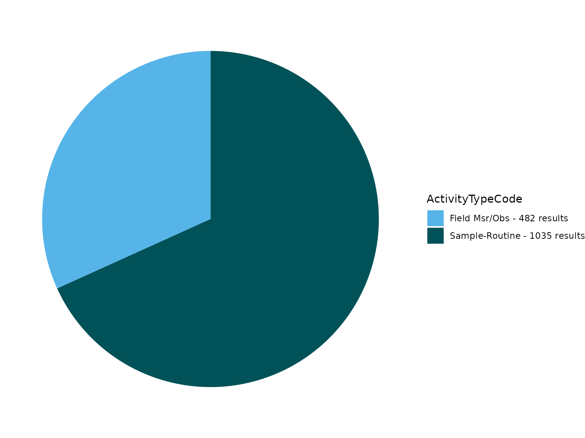
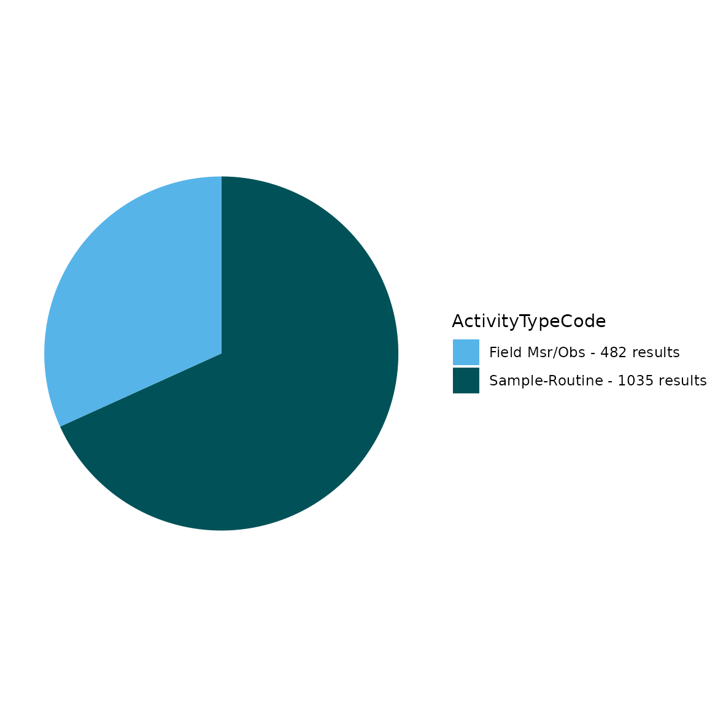

TADA Module 1: Water Quality Portal Data Discovery and Cleaning
TADA Team
2024-03-29
Source:vignettes/TADAModule1.Rmd
TADAModule1.RmdOverview
This vignette walks through how to use the TADA R Package to discover and clean (i.e., wrangle, Quality Assure and Quality Control (QAQC), and harmonize) Water Quality Portal (WQP) data from multiple organizations.
Install and load packages
First, install and load the remotes package specifying the repo. This is needed before installing TADA because it is only available on GitHub (not CRAN).
install.packages("remotes",
repos = "http://cran.us.r-project.org"
)
library(remotes)Next, install and load TADA using the remotes package. USGS’s dataRetrieval and other TADA R Package dependencies will also be downloaded automatically from CRAN with the TADA install. If desired, the development version of dataRetrieval can be downloaded directly from GitHub (un-comment).
remotes::install_github("USEPA/TADA",
ref = "develop",
dependencies = TRUE
)
# remotes::install_github("USGS-R/dataRetrieval", dependencies=TRUE)
# if you experience any issues installing TADA, try un-commenting and running
# the line below before the install
# options(download.file.method = "wininet")Finally, use the library() function to load the TADA R Package into your R session.
Retrieve WQP data
WQP data is retrieved and processed for compatibility with TADA. This function, TADA_DataRetrieval, builds on USGS’s dataRetrieval R package functions. It joins three WQP profiles: Site, Sample Results (physical/chemical metadata), and Project. In addition, it changes all data in the Characteristic, Speciation, Fraction, and Unit fields to uppercase, removes exact duplicates, and addresses result values that include special characters.
This function uses the same inputs as the dataRetrieval
readWQPdata function. readWQPdata does not
restrict the characteristics pulled from Water Quality Portal
(WQP).
Data retrieval filters include:
startDate
endDate
characteristicName
sampleMedia
siteType
statecode (review list of possible state and territory abbreviations)
countycode
siteid
organization
project
huc
characteristicType
The default TADA_DataRetrieval function automatically runs the TADA_AutoClean function. In this example, we will set TADA_AutoClean = FALSE and run it as a separate step in the work flow.
Tips:
-
All the query filters for the WQP work as an AND but within the fields there are ORs. For example:
Characteristics: If you choose pH & DO - it’s an OR. This means you will retrieve both pH OR DO data if available.
States: Similarly, if you choose VA and IL, it’s an OR. This means you will retrieve both VA OR IL data if available.
Combinations of fields are ANDs, such as State/VA AND Characteristic/DO”. This means you will receive all DO data available in VA.
“Characteristic” and “Characteristic Type” also work as an AND. This means that the Characteristic must fall within the CharacteristicGroup if both filters are being used, if not you will get an error.
The “siteid” is a general term WQP uses to describe both Site IDs from USGS databases and Monitoring Location Identifiers (from WQX). Each monitoring location in the Water Quality Portal (WQP) has a unique Monitoring Location Identifier, regardless of the database from which it derives. The Monitoring Location Identifier from the WQP is the concatenated Organization Identifier plus the Site ID number. Site IDs that only include a number are only unique identifiers for monitoring locations within USGS NWIS or EPA’s WQX databases separately.
Additional resources:
Review function documentation by entering the following code into the console: ?TADA_DataRetrieval
dataRetrieval
Uncomment below if you would like to review differences between the profiles you would get using readWQPdata vs. TADA_DataRetrieval. The profiles are different because TADA_DataRetrieval automatically joins in data from multiple WQP profiles, and does some additional data cleaning as part of the data retrieval process.
This example includes monitoring data collected from Jan 2018 to Jan 2019 by six organizations: 1) Red Lake Band of Chippewa Indians, 2) Sac & Fox Nation, 3) Pueblo of Pojoaque, 4) Minnesota Chippewa Tribe (Fond du Lac Band), 5) Pueblo of Tesuque, and 6) The Chickasaw Nation
We will move forward with this example in the remainder of the vignette.
# dataRetrieval_example <- dataRetrieval::readWQPdata(organization = c("REDLAKE_WQX", "SFNOES_WQX", "PUEBLO_POJOAQUE", "FONDULAC_WQX", "PUEBLOOFTESUQUE", "CNENVSER"), startDate = "2018-01-01", endDate = "2019-01-01", ignore_attributes = TRUE)Use the code below to download data from the WQP using TADA_DataRetrieval. Edit the code chuck below to define your own WQP query inputs.
Downloads using TADA_DataRetrieval will have the same columns each time, but be aware that data are uploaded to the Water Quality Portal by individual organizations, which may or may not follow the same conventions. Data and metadata quality are not guaranteed! Make sure to carefully explore any data and make conservative quality assurance decisions where information is limited.
Note: TADA_DataRetrieval (by leveraging dataRetrieval), automatically converts the date times to UTC. It also automatically converts the data to dates, datetimes, and numerics based on a standard algorithm.
Enter ?TADA_DataRetrieval into the console to review more example queries and additional information.
TADAProfile <- TADA_DataRetrieval(organization = c("REDLAKE_WQX", "SFNOES_WQX", "PUEBLO_POJOAQUE", "FONDULAC_WQX", "PUEBLOOFTESUQUE", "CNENVSER"), startDate = "2018-01-01", endDate = "2019-01-01", applyautoclean = FALSE)
#> [1] "Downloading WQP query results. This may take some time depending upon the query size."
#> $startDate
#> [1] "2018-01-01"
#>
#> $organization
#> [1] "REDLAKE_WQX" "SFNOES_WQX" "PUEBLO_POJOAQUE" "FONDULAC_WQX"
#> [5] "PUEBLOOFTESUQUE" "CNENVSER"
#>
#> $endDate
#> [1] "2019-01-01"
#> NEWS: USGS data availability and format are changing.
#> Beginning in mid-March 2024 the data obtained from legacy profiles
#> will not include new USGS data or recent updates to existing data.
#> To view the status of changes in data availability and code functionality, visit:
#> https://doi-usgs.github.io/dataRetrieval/articles/Status.html
#> If you have additional questions about these changes,
#> email CompTools@usgs.gov.
#> NEWS: USGS data availability and format are changing.
#> Beginning in mid-March 2024 the data obtained from legacy profiles
#> will not include new USGS data or recent updates to existing data.
#> To view the status of changes in data availability and code functionality, visit:
#> https://doi-usgs.github.io/dataRetrieval/articles/Status.html
#> If you have additional questions about these changes,
#> email CompTools@usgs.gov.If you need to download a large amount of data from across a large area, and the TADA_DataRetrieval function is not working due to WQP timeout issues, then the TADA_BigDataRetrieval function may work better.
This function does multiple synchronous data calls to the WQP (waterqualitydata.us). It uses the WQP summary service to limit the sites downloaded to only those with relevant data. It pulls back data from set number of stations at a time and then joins the data back together to produce a single TADA compatible dataframe as the output.
See ?TADA_BigDataRetrieval for more details. WARNING, some of the examples below can take multiple HOURS to run. The total run time depends on your query inputs.
# AK_AL_WaterTemp <- TADA_BigDataRetrieval(startDate = "2000-01-01", endDate = "2022-12-31", characteristicName = "Temperature, water", statecode = c("AK","AL"))
# AllWaterTemp <- TADA_BigDataRetrieval(characteristicName = "Temperature, water")
# AllPhosphorus <- TADA_BigDataRetrieval(characteristicName = "Phosphorus")
# AllCT <- TADA_BigDataRetrieval(statecode = "CT")Some TADA users are interested in using WQP data for surface water only or for analysis of some non-water data. The TADA_AnalysisDataFilter function can assist in identifying results of interest. Multiple columns are used to identify groundwater results as different organizations may populate different combinations of fields in order to identify a result as groundwater.
This function identifies surface water, groundwater, and sediment results. Users can specify whether all results should be returned with a new column, TADA.UseForAnalysis.Flag,identifying if the result should be included in further analysis or if only results that should be in included are returned.
The defaults are to include surface water, exclude groundwater and sediment, and to return only the results that should be used for analysis (clean = TRUE). This is shown in the active example below. If you would like to see all results with the TADA.UseForAnalysis.Flag column, you can uncomment the example where clean = FALSE.
If you are not interested in using TADA_AnalysisDataFilter, but would like to filter by activity media, uncomment the example to filter for water data only by using dplyr::filter() with TADA.ActivityMediaName.
# Filter to retain only results for use in analysis
TADAProfile <- TADA_AnalysisDataFilter(TADAProfile,
clean = TRUE,
surface_water = TRUE,
ground_water = FALSE,
sediment = FALSE
)
#> [1] "TADA_AnalysisDataFilter: Identifying groundwater results."
#> [1] "TADA_AnalysisDataFilter: Flagging surface water results to include in assessments."
#> [1] "TADA_AnalysisDataFilter: Flagging groundwater results to exclude from assessments."
#> [1] "TADA_AnalysisDataFilter: Flagging sediment results to exclude from assessments."
#> [1] "TADA_AnalysisDataFilter: Removing results flagged for exclusion from assessments."
# Add TADA.UseForAnalysis.Flag column to identify which results should be used for analysis
# TADAProfile <- TADA_AnalysisDataFilter(TADAProfile, clean = FALSE)
# Remove data for non-water media types, alternate workflow without using TADA_AnalysisDataFilter()
# TADAProfile <- dplyr::filter(TADAProfile, TADA.ActivityMediaName == "WATER")AutoClean
Now TADA_AutoClean can be run on a smaller dataset after unnecessary results have been removed. It performs the following functions on the data retrieved from the WQP:
TADA_ConvertSpecialChars - converts result value columns to numeric and flags non-numeric values that could not be converted.
TADA_ConvertResultUnits - unifies result units for easier quality control and review
TADA_ConvertDepthUnits - converts depth units to a consistent unit (meters).
TADA_IDCensoredData - categorizes detection limit data and identifies mismatches in result detection condition and result detection limit type.
Other helpful actions - converts important text columns to all upper-case letters, removes exact duplicates, and uses WQX format rules to harmonize specific NWIS metadata conventions (e.g. move characteristic speciation from the TADA.ResultMeasure.MeasureUnitCode column to the TADA.MethodSpeciationName column)
As a general rule, TADA functions do not change any contents in the WQP-served columns. Instead, they add new columns with the prefix “TADA.” The following columns are numeric versions of their WQP origins:
- TADA.ResultMeasureValue
- TADA.DetectionQuantitationLimitMeasure.MeasureValue
- TADA.LatitudeMeasure
- TADA.LongitudeMeasureThese functions also add the columns TADA.ResultMeasureValueDataTypes.Flag and TADA.DetectionQuantitationLimitMeasure.MeasureValueDataTypes.Flag, which provide information about the result values that is needed to address censored data later on (i.e., nondetections). Specifically, these new columns flag if special characters are included in result values, and specifies what the special characters are.
# run TADA_AutoClean on filtered dataset to convert special characters, result units, and depth units and identify censored data.
TADAProfile <- TADA_AutoClean(TADAProfile)
#> [1] "TADA_Autoclean: creating TADA-specific columns."
#> [1] "TADA_Autoclean: harmonizing dissolved oxygen characterisic name to DISSOLVED OXYGEN SATURATION if unit is % or % SATURATN."
#> [1] "TADA_Autoclean: handling special characters and coverting TADA.ResultMeasureValue and TADA.DetectionQuantitationLimitMeasure.MeasureValue value fields to numeric."
#> [1] "TADA_Autoclean: converting TADA.LatitudeMeasure and TADA.LongitudeMeasure fields to numeric."
#> [1] "TADA_Autoclean: harmonizing synonymous unit names (m and meters) to m."
#> [1] "TADA_Autoclean: updating deprecated (i.e. retired) characteristic names."
#> [1] "8 results in your dataset have one of the following deprecated characteristic names: Inorganic nitrogen (nitrate and nitrite) ***retired***use Nitrate + Nitrite. These names have been substituted with the updated preferred names in the TADA.CharacteristicName field."
#> [1] "TADA_Autoclean: harmonizing result and depth units."
#> [1] "TADA_Autoclean: creating TADA.ComparableDataIdentifier field for use when generating visualizations and analyses."
#> [1] "NOTE: This version of the TADA package is designed to work with numeric data with media name: 'WATER'. TADA_AutoClean does not currently remove (filter) data with non-water media types. If desired, the user must make this specification on their own outside of package functions. Example: dplyr::filter(.data, TADA.ActivityMediaName == 'WATER')"Review all column names in the TADA Profile to familiarize yourself with the dataset after TADA_AutoClean has added additional TADA prefixed columns. TADA_SummarizeColumn summarizes the data set based on the user specified column and returns a dataframe displaying the number of sites and number of records for each unique value in the specified column. The example below uses TADA.CharacteristicName.
# View column names for TADAProfile
colnames(TADAProfile)
#> [1] "ActivityTypeCode"
#> [2] "ActivityMediaName"
#> [3] "TADA.ActivityMediaName"
#> [4] "ActivityMediaSubdivisionName"
#> [5] "ResultSampleFractionText"
#> [6] "TADA.ResultSampleFractionText"
#> [7] "CharacteristicName"
#> [8] "TADA.CharacteristicName"
#> [9] "SubjectTaxonomicName"
#> [10] "SampleTissueAnatomyName"
#> [11] "MethodSpeciationName"
#> [12] "TADA.MethodSpeciationName"
#> [13] "TADA.ComparableDataIdentifier"
#> [14] "ActivityStartDate"
#> [15] "ActivityStartTime.Time"
#> [16] "ActivityStartTime.TimeZoneCode"
#> [17] "ActivityStartDateTime"
#> [18] "ResultTimeBasisText"
#> [19] "ResultMeasureValue"
#> [20] "TADA.ResultMeasureValue"
#> [21] "TADA.ResultMeasureValueDataTypes.Flag"
#> [22] "ResultValueTypeName"
#> [23] "ResultMeasure.MeasureUnitCode"
#> [24] "TADA.ResultMeasure.MeasureUnitCode"
#> [25] "TADA.WQXResultUnitConversion"
#> [26] "ResultDetectionConditionText"
#> [27] "DetectionQuantitationLimitTypeName"
#> [28] "DetectionQuantitationLimitMeasure.MeasureValue"
#> [29] "TADA.DetectionQuantitationLimitMeasure.MeasureValue"
#> [30] "TADA.DetectionQuantitationLimitMeasure.MeasureValueDataTypes.Flag"
#> [31] "DetectionQuantitationLimitMeasure.MeasureUnitCode"
#> [32] "TADA.DetectionQuantitationLimitMeasure.MeasureUnitCode"
#> [33] "ResultDepthHeightMeasure.MeasureValue"
#> [34] "TADA.ResultDepthHeightMeasure.MeasureValue"
#> [35] "TADA.ResultDepthHeightMeasure.MeasureValueDataTypes.Flag"
#> [36] "ResultDepthHeightMeasure.MeasureUnitCode"
#> [37] "TADA.ResultDepthHeightMeasure.MeasureUnitCode"
#> [38] "ResultDepthAltitudeReferencePointText"
#> [39] "ActivityRelativeDepthName"
#> [40] "ActivityDepthHeightMeasure.MeasureValue"
#> [41] "TADA.ActivityDepthHeightMeasure.MeasureValue"
#> [42] "TADA.ActivityDepthHeightMeasure.MeasureValueDataTypes.Flag"
#> [43] "ActivityDepthHeightMeasure.MeasureUnitCode"
#> [44] "TADA.ActivityDepthHeightMeasure.MeasureUnitCode"
#> [45] "ActivityTopDepthHeightMeasure.MeasureValue"
#> [46] "TADA.ActivityTopDepthHeightMeasure.MeasureValue"
#> [47] "TADA.ActivityTopDepthHeightMeasure.MeasureValueDataTypes.Flag"
#> [48] "ActivityTopDepthHeightMeasure.MeasureUnitCode"
#> [49] "TADA.ActivityTopDepthHeightMeasure.MeasureUnitCode"
#> [50] "ActivityBottomDepthHeightMeasure.MeasureValue"
#> [51] "TADA.ActivityBottomDepthHeightMeasure.MeasureValue"
#> [52] "TADA.ActivityBottomDepthHeightMeasure.MeasureValueDataTypes.Flag"
#> [53] "ActivityBottomDepthHeightMeasure.MeasureUnitCode"
#> [54] "TADA.ActivityBottomDepthHeightMeasure.MeasureUnitCode"
#> [55] "StatisticalBaseCode"
#> [56] "ResultFileUrl"
#> [57] "ResultAnalyticalMethod.MethodName"
#> [58] "ResultAnalyticalMethod.MethodDescriptionText"
#> [59] "ResultAnalyticalMethod.MethodIdentifier"
#> [60] "ResultAnalyticalMethod.MethodIdentifierContext"
#> [61] "ResultAnalyticalMethod.MethodUrl"
#> [62] "SampleCollectionMethod.MethodIdentifier"
#> [63] "SampleCollectionMethod.MethodIdentifierContext"
#> [64] "SampleCollectionMethod.MethodName"
#> [65] "SampleCollectionMethod.MethodDescriptionText"
#> [66] "SampleCollectionEquipmentName"
#> [67] "MeasureQualifierCode"
#> [68] "ResultCommentText"
#> [69] "ActivityCommentText"
#> [70] "HydrologicCondition"
#> [71] "HydrologicEvent"
#> [72] "DataQuality.PrecisionValue"
#> [73] "DataQuality.BiasValue"
#> [74] "DataQuality.ConfidenceIntervalValue"
#> [75] "DataQuality.UpperConfidenceLimitValue"
#> [76] "DataQuality.LowerConfidenceLimitValue"
#> [77] "SamplingDesignTypeCode"
#> [78] "LaboratoryName"
#> [79] "ResultLaboratoryCommentText"
#> [80] "ResultIdentifier"
#> [81] "ActivityIdentifier"
#> [82] "OrganizationIdentifier"
#> [83] "OrganizationFormalName"
#> [84] "ProjectName"
#> [85] "ProjectDescriptionText"
#> [86] "ProjectIdentifier"
#> [87] "ProjectFileUrl"
#> [88] "QAPPApprovedIndicator"
#> [89] "QAPPApprovalAgencyName"
#> [90] "CountryCode"
#> [91] "StateCode"
#> [92] "CountyCode"
#> [93] "MonitoringLocationName"
#> [94] "MonitoringLocationTypeName"
#> [95] "MonitoringLocationDescriptionText"
#> [96] "LatitudeMeasure"
#> [97] "TADA.LatitudeMeasure"
#> [98] "LongitudeMeasure"
#> [99] "TADA.LongitudeMeasure"
#> [100] "HUCEightDigitCode"
#> [101] "MonitoringLocationIdentifier"
#> [102] "AquiferName"
#> [103] "AquiferTypeName"
#> [104] "LocalAqfrName"
#> [105] "ConstructionDateText"
#> [106] "WellDepthMeasure.MeasureValue"
#> [107] "WellDepthMeasure.MeasureUnitCode"
#> [108] "WellHoleDepthMeasure.MeasureValue"
#> [109] "WellHoleDepthMeasure.MeasureUnitCode"
#> [110] "ActivityDepthAltitudeReferencePointText"
#> [111] "ActivityEndDate"
#> [112] "ActivityEndTime.Time"
#> [113] "ActivityEndTime.TimeZoneCode"
#> [114] "ActivityEndDateTime"
#> [115] "ActivityConductingOrganizationText"
#> [116] "SampleAquifer"
#> [117] "ActivityLocation.LatitudeMeasure"
#> [118] "ActivityLocation.LongitudeMeasure"
#> [119] "ResultStatusIdentifier"
#> [120] "ResultWeightBasisText"
#> [121] "ResultTemperatureBasisText"
#> [122] "ResultParticleSizeBasisText"
#> [123] "USGSPCode"
#> [124] "BinaryObjectFileName"
#> [125] "BinaryObjectFileTypeCode"
#> [126] "AnalysisStartDate"
#> [127] "ResultDetectionQuantitationLimitUrl"
#> [128] "LabSamplePreparationUrl"
#> [129] "timeZoneStart"
#> [130] "timeZoneEnd"
#> [131] "SourceMapScaleNumeric"
#> [132] "HorizontalAccuracyMeasure.MeasureValue"
#> [133] "HorizontalAccuracyMeasure.MeasureUnitCode"
#> [134] "HorizontalCollectionMethodName"
#> [135] "HorizontalCoordinateReferenceSystemDatumName"
#> [136] "VerticalMeasure.MeasureValue"
#> [137] "VerticalMeasure.MeasureUnitCode"
#> [138] "VerticalAccuracyMeasure.MeasureValue"
#> [139] "VerticalAccuracyMeasure.MeasureUnitCode"
#> [140] "VerticalCollectionMethodName"
#> [141] "VerticalCoordinateReferenceSystemDatumName"
#> [142] "FormationTypeText"
#> [143] "ProjectMonitoringLocationWeightingUrl"
#> [144] "DrainageAreaMeasure.MeasureValue"
#> [145] "DrainageAreaMeasure.MeasureUnitCode"
#> [146] "ContributingDrainageAreaMeasure.MeasureValue"
#> [147] "ContributingDrainageAreaMeasure.MeasureUnitCode"
#> [148] "ProviderName"
#> [149] "LastUpdated"
# Review the number of sites and number of records for each CharacteristicName in TADAProfile
TADAProfile_CharSummary <- TADA_SummarizeColumn(TADAProfile, "TADA.CharacteristicName")
# View TADAProfile_CharSummary
TADAProfile_CharSummary
#> # A tibble: 104 × 3
#> TADA.CharacteristicName n_sites n_records
#> <chr> <int> <int>
#> 1 .ALPHA.-ENDOSULFAN 6 7
#> 2 .BETA.-ENDOSULFAN 6 7
#> 3 ALDRIN 6 7
#> 4 ALKALINITY, TOTAL 126 688
#> 5 ALPHA PARTICLE 6 14
#> 6 ALUMINUM 6 7
#> 7 AMMONIA-NITROGEN 83 328
#> 8 AMMONIUM 16 93
#> 9 APPARENT COLOR 39 106
#> 10 ARSENIC 37 38
#> # ℹ 94 more rowsInvalid coordinates
Review station locations and summary information using the TADA_OverviewMap function. TADA_OverviewMap counts the number of unique results, characteristics, and organizations at each monitoring location in the dataset and creates a tidy map for reviewing summary stats spatially. Larger point sizes indicate more results collected at a given site, while darker blue colors indicate more unique characteristics collected at the site. Users may click on a site to view a pop-up with this summary information, including the number of organizations that reported results at that site. This map may inform a user’s decision to remove/correct sites that are outside the US.
TADA_OverviewMap(TADAProfile)The TADA TADA_FlagCoordinates function identifies and flags potentially invalid coordinate data. While its functionality is showcased here, it is always important to review any invalid outputs before cleaning to reduce the risk of leaving out usable data/sites.
Allowable values for clean_outsideUSA are “no”, “remove”, or “change sign”. The default is “no” which flags latitude and longitude coordinates outside the USA. Assigning clean_ousideUSA = “remove” will remove rows of data with coordinates outside the USA. And assigning clean_outsideUSA = “change sign” will flip the sign of latitude or longitude coordinates flagged as outside the USA. The “change sign” option should only be used when it is known that coordinates were entered with the wrong sign in WQX; additionally, the data owner should fix these incorrect coordinates in the raw data through the WQX - for assistance email the WQX help desk: WQX@epa.gov
Allowable values for clean_imprecise are TRUE or FALSE. The default is FALSE which flags rows of data with invalid or imprecise coordinates without removing them. Assigning clean_imprecise = TRUE will remove rows of data with invalid or imprecise coordinates.
Allowable values for flaggedonly are TRUE or FALSE. The default is FALSE which keeps all rows of data regardless of flag status. Assigning flaggedonly = TRUE filters the dataframe to show only rows of data which are flagged.
When clean_outsideUSA = “no” and/or clean_imprecise = FALSE, a column will be appended titled “TADA.InvalidCoordinates.Flag” with the following flags (if relevant to dataframe):
If the latitude is less than zero, the row will be flagged with “LAT_OutsideUSA”. (Exception for American Samoa)
If the longitude is greater than zero AND less than 145, the row will be flagged as “LONG_OutsideUSA”. (Exceptions for Guam and the Northern Mariana Islands)
If the latitude or longitude contains the string, “999”, the row will be flagged as invalid.
Finally, precision can be measured by the number of decimal places in the latitude and longitude provided. If either does not have any numbers to the right of the decimal point, the row will be flagged as “Imprecise”.
# flag only
TADAProfileClean1 <- TADA_FlagCoordinates(TADAProfile, clean_outsideUSA = "no", clean_imprecise = FALSE, flaggedonly = FALSE)
# review unique flags in TADAProfileClean1
unique(TADAProfileClean1$TADA.InvalidCoordinates.Flag)
#> [1] "OK" "Imprecise_lessthan3decimaldigits"
# review unique MonitoringLocationIdentifiers in your flag dataframe
unique(TADAProfileClean1$MonitoringLocationIdentifier)
#> [1] "CNENVSER-RC40" "CNENVSER-RCOK"
#> [3] "CNENVSER-BR99" "CNENVSER-BRHB"
#> [5] "CNENVSER-PENN" "CNENVSER-LSHQ"
#> [7] "CNENVSER-LSCC" "CNENVSER-LSHT"
#> [9] "CNENVSER-LSFR" "CNENVSER-LS99"
#> [11] "CNENVSER-LSER" "CNENVSER-BC99"
#> [13] "CNENVSER-Lake" "CNENVSER-Deleware"
#> [15] "CNENVSER-HONEY" "CNENVSER-RUSH"
#> [17] "SFNOES_WQX-North Canadian River" "SFNOES_WQX-Veteran's Lake"
#> [19] "SFNOES_WQX-Deer Creek 001" "SFNOES_WQX-North Canadian 003"
#> [21] "SFNOES_WQX-North Canadian 002" "SFNOES_WQX-Shan Creek 001"
#> [23] "SFNOES_WQX-Rock Creek 001" "SFNOES_WQX-Veteran's Lake 005"
#> [25] "SFNOES_WQX-Veteran's Lake 002" "SFNOES_WQX-Veteran's Lake 003"
#> [27] "SFNOES_WQX-Veteran's Lake 004" "SFNOES_WQX-Wildhorse Creek"
#> [29] "PUEBLO_POJOAQUE-NR" "PUEBLO_POJOAQUE-PR"
#> [31] "PUEBLO_POJOAQUE-TR" "PUEBLOOFTESUQUE-MS01AD"
#> [33] "PUEBLOOFTESUQUE-MS02SB" "PUEBLOOFTESUQUE-MS03ID"
#> [35] "PUEBLOOFTESUQUE-MS04NP" "PUEBLOOFTESUQUE-MS05TB"
#> [37] "PUEBLOOFTESUQUE-MS06VG" "PUEBLOOFTESUQUE-MS07AR"
#> [39] "PUEBLOOFTESUQUE-MS08RC" "REDLAKE_WQX-ANKE"
#> [41] "REDLAKE_WQX-BASS-SE" "REDLAKE_WQX-09RD003"
#> [43] "REDLAKE_WQX-BATT-NB" "REDLAKE_WQX-BIGT"
#> [45] "REDLAKE_WQX-BATT-I" "REDLAKE_WQX-CHAI-M"
#> [47] "REDLAKE_WQX-BATT-SB" "REDLAKE_WQX-COLO"
#> [49] "REDLAKE_WQX-JOHN" "REDLAKE_WQX-JOUR"
#> [51] "REDLAKE_WQX-KINN" "REDLAKE_WQX-LRC"
#> [53] "REDLAKE_WQX-CLWR-B" "REDLAKE_WQX-LRE"
#> [55] "REDLAKE_WQX-LRW" "REDLAKE_WQX-MORR"
#> [57] "REDLAKE_WQX-FULL-E" "REDLAKE_WQX-FULL-W"
#> [59] "REDLAKE_WQX-ISLA" "REDLAKE_WQX-LRW-C"
#> [61] "REDLAKE_WQX-EMER" "REDLAKE_WQX-GIBI"
#> [63] "REDLAKE_WQX-MUER" "REDLAKE_WQX-GREE-REDBY"
#> [65] "REDLAKE_WQX-GREE-REDLAKE" "REDLAKE_WQX-BLAC-H"
#> [67] "REDLAKE_WQX-ELEP" "REDLAKE_WQX-HEAR"
#> [69] "REDLAKE_WQX-LONG" "REDLAKE_WQX-LRE-C"
#> [71] "REDLAKE_WQX-LITT" "REDLAKE_WQX-LUSS"
#> [73] "REDLAKE_WQX-BEAR-I" "REDLAKE_WQX-ROUN"
#> [75] "REDLAKE_WQX-SHEM" "REDLAKE_WQX-SAND"
#> [77] "REDLAKE_WQX-SHEL" "REDLAKE_WQX-URE"
#> [79] "REDLAKE_WQX-MUDR-M" "REDLAKE_WQX-BIGT-BAY"
#> [81] "REDLAKE_WQX-BUFF-BAY" "REDLAKE_WQX-SQUA"
#> [83] "REDLAKE_WQX-WILL" "REDLAKE_WQX-URE-C"
#> [85] "REDLAKE_WQX-PIKE-OR" "REDLAKE_WQX-URW-C"
#> [87] "REDLAKE_WQX-URW" "REDLAKE_WQX-BALI"
#> [89] "REDLAKE_WQX-BASS-NW" "REDLAKE_WQX-PICK-I"
#> [91] "REDLAKE_WQX-PIKE-B" "REDLAKE_WQX-BORD"
#> [93] "REDLAKE_WQX-CHAI-S" "REDLAKE_WQX-REDL-O"
#> [95] "REDLAKE_WQX-DICK" "REDLAKE_WQX-GOUR"
#> [97] "REDLAKE_WQX-NONA" "REDLAKE_WQX-SHAC"
#> [99] "REDLAKE_WQX-TOWN" "REDLAKE_WQX-URC"
#> [101] "REDLAKE_WQX-STON-I" "REDLAKE_WQX-S007-884"
#> [103] "REDLAKE_WQX-SANR-U" "REDLAKE_WQX-ROCK-O"
#> [105] "REDLAKE_WQX-S002-123" "REDLAKE_WQX-TAMA-B"
#> [107] "REDLAKE_WQX-CORM-B" "REDLAKE_WQX-HARR-I"
#> [109] "REDLAKE_WQX-MUDR-I" "REDLAKE_WQX-PIKE-I"
#> [111] "REDLAKE_WQX-PINE-I" "REDLAKE_WQX-POPL-I"
#> [113] "REDLAKE_WQX-BLAC-I" "REDLAKE_WQX-10RD014"
#> [115] "REDLAKE_WQX-TEAL" "REDLAKE_WQX-REDH"
#> [117] "REDLAKE_WQX-GROU" "REDLAKE_WQX-CAHI"
#> [119] "REDLAKE_WQX-10RD011" "FONDULAC_WQX-106"
#> [121] "FONDULAC_WQX-104" "FONDULAC_WQX-122E"
#> [123] "FONDULAC_WQX-122F" "FONDULAC_WQX-122G"
#> [125] "FONDULAC_WQX-122J" "FONDULAC_WQX-122Q"
#> [127] "FONDULAC_WQX-119" "FONDULAC_WQX-124"
#> [129] "FONDULAC_WQX-122" "FONDULAC_WQX-112"
#> [131] "FONDULAC_WQX-108" "FONDULAC_WQX-105"
#> [133] "FONDULAC_WQX-102A" "FONDULAC_WQX-111"
#> [135] "FONDULAC_WQX-SLRM 38.5" "FONDULAC_WQX-101"
#> [137] "FONDULAC_WQX-113" "FONDULAC_WQX-114B"
#> [139] "FONDULAC_WQX-110" "FONDULAC_WQX-115"
#> [141] "FONDULAC_WQX-SLRM 53" "FONDULAC_WQX-SLRM 46.5"
#> [143] "FONDULAC_WQX-114A" "FONDULAC_WQX-123A"
#> [145] "FONDULAC_WQX-123B" "FONDULAC_WQX-203A"
#> [147] "FONDULAC_WQX-116" "FONDULAC_WQX-202B"
#> [149] "FONDULAC_WQX-204A" "FONDULAC_WQX-102B"
#> [151] "FONDULAC_WQX-205" "FONDULAC_WQX-207B"
#> [153] "FONDULAC_WQX-118" "FONDULAC_WQX-SLRM 51"
#> [155] "FONDULAC_WQX-121" "FONDULAC_WQX-109"
#> [157] "FONDULAC_WQX-SLRM 40.5" "FONDULAC_WQX-103"
Unique_InvalidCoordinateFlags <- TADAProfileClean1 %>%
dplyr::select(
"MonitoringLocationIdentifier",
"MonitoringLocationName",
"TADA.InvalidCoordinates.Flag",
"OrganizationIdentifier",
"TADA.LongitudeMeasure",
"TADA.LatitudeMeasure",
"MonitoringLocationTypeName",
"CountryCode",
"StateCode",
"CountyCode",
"HUCEightDigitCode",
"MonitoringLocationDescriptionText",
"ProjectName",
"ProjectIdentifier",
"OrganizationFormalName"
) %>%
dplyr::distinct()
Unique_InvalidCoordinateFlags
#> MonitoringLocationIdentifier
#> 1 CNENVSER-RC40
#> 2 CNENVSER-RCOK
#> 3 CNENVSER-BR99
#> 4 CNENVSER-BRHB
#> 5 CNENVSER-PENN
#> 6 CNENVSER-LSHQ
#> 7 CNENVSER-LSCC
#> 8 CNENVSER-LSHT
#> 9 CNENVSER-LSFR
#> 10 CNENVSER-LS99
#> 11 CNENVSER-LSER
#> 12 CNENVSER-BC99
#> 13 CNENVSER-Lake
#> 14 CNENVSER-Deleware
#> 15 CNENVSER-HONEY
#> 16 CNENVSER-RUSH
#> 17 SFNOES_WQX-North Canadian River
#> 18 SFNOES_WQX-Veteran's Lake
#> 19 SFNOES_WQX-Deer Creek 001
#> 20 SFNOES_WQX-North Canadian 003
#> 21 SFNOES_WQX-North Canadian 002
#> 22 SFNOES_WQX-Shan Creek 001
#> 23 SFNOES_WQX-Rock Creek 001
#> 24 SFNOES_WQX-Veteran's Lake 005
#> 25 SFNOES_WQX-Veteran's Lake 002
#> 26 SFNOES_WQX-Veteran's Lake 003
#> 27 SFNOES_WQX-Veteran's Lake 004
#> 28 SFNOES_WQX-Wildhorse Creek
#> 29 PUEBLO_POJOAQUE-NR
#> 30 PUEBLO_POJOAQUE-NR
#> 31 PUEBLO_POJOAQUE-PR
#> 32 PUEBLO_POJOAQUE-TR
#> 33 PUEBLOOFTESUQUE-MS01AD
#> 34 PUEBLOOFTESUQUE-MS02SB
#> 35 PUEBLOOFTESUQUE-MS03ID
#> 36 PUEBLOOFTESUQUE-MS04NP
#> 37 PUEBLOOFTESUQUE-MS05TB
#> 38 PUEBLOOFTESUQUE-MS06VG
#> 39 PUEBLOOFTESUQUE-MS07AR
#> 40 PUEBLOOFTESUQUE-MS08RC
#> 41 REDLAKE_WQX-ANKE
#> 42 REDLAKE_WQX-ANKE
#> 43 REDLAKE_WQX-BASS-SE
#> 44 REDLAKE_WQX-09RD003
#> 45 REDLAKE_WQX-BASS-SE
#> 46 REDLAKE_WQX-BATT-NB
#> 47 REDLAKE_WQX-BIGT
#> 48 REDLAKE_WQX-BATT-I
#> 49 REDLAKE_WQX-CHAI-M
#> 50 REDLAKE_WQX-BATT-SB
#> 51 REDLAKE_WQX-CHAI-M
#> 52 REDLAKE_WQX-COLO
#> 53 REDLAKE_WQX-JOHN
#> 54 REDLAKE_WQX-JOHN
#> 55 REDLAKE_WQX-JOUR
#> 56 REDLAKE_WQX-JOUR
#> 57 REDLAKE_WQX-KINN
#> 58 REDLAKE_WQX-KINN
#> 59 REDLAKE_WQX-LRC
#> 60 REDLAKE_WQX-CLWR-B
#> 61 REDLAKE_WQX-LRE
#> 62 REDLAKE_WQX-LRW
#> 63 REDLAKE_WQX-MORR
#> 64 REDLAKE_WQX-MORR
#> 65 REDLAKE_WQX-BIGT
#> 66 REDLAKE_WQX-FULL-E
#> 67 REDLAKE_WQX-FULL-E
#> 68 REDLAKE_WQX-FULL-W
#> 69 REDLAKE_WQX-FULL-W
#> 70 REDLAKE_WQX-ISLA
#> 71 REDLAKE_WQX-ISLA
#> 72 REDLAKE_WQX-LRW-C
#> 73 REDLAKE_WQX-EMER
#> 74 REDLAKE_WQX-EMER
#> 75 REDLAKE_WQX-GIBI
#> 76 REDLAKE_WQX-MUER
#> 77 REDLAKE_WQX-GREE-REDBY
#> 78 REDLAKE_WQX-GREE-REDBY
#> 79 REDLAKE_WQX-GREE-REDLAKE
#> 80 REDLAKE_WQX-GREE-REDLAKE
#> 81 REDLAKE_WQX-BLAC-H
#> 82 REDLAKE_WQX-ELEP
#> 83 REDLAKE_WQX-HEAR
#> 84 REDLAKE_WQX-HEAR
#> 85 REDLAKE_WQX-LONG
#> 86 REDLAKE_WQX-LONG
#> 87 REDLAKE_WQX-LRE-C
#> 88 REDLAKE_WQX-LITT
#> 89 REDLAKE_WQX-LITT
#> 90 REDLAKE_WQX-LUSS
#> 91 REDLAKE_WQX-LUSS
#> 92 REDLAKE_WQX-BEAR-I
#> 93 REDLAKE_WQX-ROUN
#> 94 REDLAKE_WQX-ROUN
#> 95 REDLAKE_WQX-SHEM
#> 96 REDLAKE_WQX-SAND
#> 97 REDLAKE_WQX-SHEM
#> 98 REDLAKE_WQX-SAND
#> 99 REDLAKE_WQX-SHEL
#> 100 REDLAKE_WQX-URE
#> 101 REDLAKE_WQX-MUDR-M
#> 102 REDLAKE_WQX-BIGT-BAY
#> 103 REDLAKE_WQX-BUFF-BAY
#> 104 REDLAKE_WQX-SHEL
#> 105 REDLAKE_WQX-SQUA
#> 106 REDLAKE_WQX-SQUA
#> 107 REDLAKE_WQX-WILL
#> 108 REDLAKE_WQX-URE-C
#> 109 REDLAKE_WQX-PIKE-OR
#> 110 REDLAKE_WQX-URW-C
#> 111 REDLAKE_WQX-URW
#> 112 REDLAKE_WQX-BALI
#> 113 REDLAKE_WQX-BALI
#> 114 REDLAKE_WQX-BASS-NW
#> 115 REDLAKE_WQX-BASS-NW
#> 116 REDLAKE_WQX-PICK-I
#> 117 REDLAKE_WQX-PIKE-B
#> 118 REDLAKE_WQX-BORD
#> 119 REDLAKE_WQX-CHAI-S
#> 120 REDLAKE_WQX-REDL-O
#> 121 REDLAKE_WQX-CHAI-S
#> 122 REDLAKE_WQX-BORD
#> 123 REDLAKE_WQX-DICK
#> 124 REDLAKE_WQX-DICK
#> 125 REDLAKE_WQX-GOUR
#> 126 REDLAKE_WQX-NONA
#> 127 REDLAKE_WQX-NONA
#> 128 REDLAKE_WQX-SHAC
#> 129 REDLAKE_WQX-TOWN
#> 130 REDLAKE_WQX-TOWN
#> 131 REDLAKE_WQX-URC
#> 132 REDLAKE_WQX-STON-I
#> 133 REDLAKE_WQX-S007-884
#> 134 REDLAKE_WQX-SANR-U
#> 135 REDLAKE_WQX-ROCK-O
#> 136 REDLAKE_WQX-S002-123
#> 137 REDLAKE_WQX-TAMA-B
#> 138 REDLAKE_WQX-CORM-B
#> 139 REDLAKE_WQX-HARR-I
#> 140 REDLAKE_WQX-MUDR-I
#> 141 REDLAKE_WQX-PIKE-I
#> 142 REDLAKE_WQX-PINE-I
#> 143 REDLAKE_WQX-POPL-I
#> 144 REDLAKE_WQX-BLAC-I
#> 145 REDLAKE_WQX-10RD014
#> 146 REDLAKE_WQX-TEAL
#> 147 REDLAKE_WQX-REDH
#> 148 REDLAKE_WQX-GROU
#> 149 REDLAKE_WQX-CAHI
#> 150 REDLAKE_WQX-ELEP
#> 151 REDLAKE_WQX-10RD011
#> 152 REDLAKE_WQX-09RD003
#> 153 REDLAKE_WQX-10RD014
#> 154 PUEBLO_POJOAQUE-PR
#> 155 PUEBLO_POJOAQUE-TR
#> 156 FONDULAC_WQX-106
#> 157 FONDULAC_WQX-104
#> 158 FONDULAC_WQX-122E
#> 159 FONDULAC_WQX-122F
#> 160 FONDULAC_WQX-122G
#> 161 FONDULAC_WQX-122J
#> 162 FONDULAC_WQX-122Q
#> 163 REDLAKE_WQX-BATT-I
#> 164 REDLAKE_WQX-MUDR-M
#> 165 REDLAKE_WQX-SANR-U
#> 166 REDLAKE_WQX-CLWR-B
#> 167 REDLAKE_WQX-PIKE-B
#> 168 REDLAKE_WQX-PIKE-I
#> 169 REDLAKE_WQX-S002-123
#> 170 REDLAKE_WQX-MUDR-I
#> 171 REDLAKE_WQX-PIKE-OR
#> 172 REDLAKE_WQX-BLAC-I
#> 173 REDLAKE_WQX-ROCK-O
#> 174 REDLAKE_WQX-BATT-NB
#> 175 REDLAKE_WQX-BATT-SB
#> 176 REDLAKE_WQX-REDL-O
#> 177 REDLAKE_WQX-CORM-B
#> 178 REDLAKE_WQX-TAMA-B
#> 179 REDLAKE_WQX-BLAC-H
#> 180 FONDULAC_WQX-119
#> 181 FONDULAC_WQX-124
#> 182 FONDULAC_WQX-122
#> 183 FONDULAC_WQX-112
#> 184 FONDULAC_WQX-108
#> 185 FONDULAC_WQX-105
#> 186 FONDULAC_WQX-102A
#> 187 FONDULAC_WQX-111
#> 188 FONDULAC_WQX-SLRM 38.5
#> 189 FONDULAC_WQX-101
#> 190 FONDULAC_WQX-113
#> 191 FONDULAC_WQX-114B
#> 192 FONDULAC_WQX-110
#> 193 FONDULAC_WQX-115
#> 194 FONDULAC_WQX-SLRM 53
#> 195 FONDULAC_WQX-SLRM 46.5
#> 196 FONDULAC_WQX-114A
#> 197 FONDULAC_WQX-123A
#> 198 FONDULAC_WQX-123B
#> 199 FONDULAC_WQX-203A
#> 200 FONDULAC_WQX-116
#> 201 FONDULAC_WQX-202B
#> 202 FONDULAC_WQX-204A
#> 203 FONDULAC_WQX-102B
#> 204 FONDULAC_WQX-205
#> 205 FONDULAC_WQX-207B
#> 206 FONDULAC_WQX-118
#> 207 FONDULAC_WQX-SLRM 51
#> 208 FONDULAC_WQX-121
#> 209 FONDULAC_WQX-109
#> 210 FONDULAC_WQX-SLRM 40.5
#> 211 FONDULAC_WQX-103
#> MonitoringLocationName
#> 1 Rock Creek 40 ft
#> 2 Rock Creek Oklahoma St.
#> 3 Blue River Highway 99
#> 4 Blue River Hughes Bridge
#> 5 Pennington Creek
#> 6 Little Sandy Head Quarters
#> 7 Little Sandy Country Club
#> 8 Little Sandy Horse Track
#> 9 Little Sandy Fulkerson Rd.
#> 10 Little Sandy Highway 99
#> 11 Little Sandy Egypt Rd.
#> 12 Boggy Creek Highway 99
#> 13 Lake Creek Clear Boggy Water Shed
#> 14 Deleware Creek Clear Boggy Water Shed
#> 15 Honey Creek
#> 16 Rush Creek
#> 17 North Canadian River
#> 18 Veteran's Lake
#> 19 Deer Creek 001
#> 20 North Canadian 003
#> 21 North Canadian 002
#> 22 Shan Creek 001
#> 23 Rock Creek 001
#> 24 Veteran's Lake 005
#> 25 Veteran's Lake 002
#> 26 Veteran's Lake 003
#> 27 Veteran's Lake 004
#> 28 Wildhorse Creek
#> 29 Nambe River
#> 30 Nambe River
#> 31 Pojoaque River
#> 32 Tesuque River
#> 33 USGS Guaging station Above Diversions/USFS Boundary
#> 34 South Boundary
#> 35 Infiltration Diversion/Upper Ponds
#> 36 Navajo Pond
#> 37 Tesuque Pueblo Bridge
#> 38 Vigil Grant
#> 39 Aspen Ranch
#> 40 Rio Chupadero
#> 41 Ankeewinsee Lake
#> 42 Ankeewinsee Lake
#> 43 Bass Lake: Southeast Basin
#> 44 Sandy River at Gonvick Truck Trail
#> 45 Bass Lake: Southeast Basin
#> 46 Battle River North Branch
#> 47 Big Thunder Lake
#> 48 Battle River Inlet
#> 49 Chain: Middle Lake
#> 50 Battle River South Branch
#> 51 Chain: Middle Lake
#> 52 Colombo Lake
#> 53 Johnson Lake
#> 54 Johnson Lake
#> 55 Jourdain Lake
#> 56 Jourdain Lake
#> 57 Kinney Lake
#> 58 Kinney Lake
#> 59 Lower Red Lake : Central
#> 60 Clearwater River at Boundary
#> 61 Lower Red Lake : East
#> 62 Lower Red Lake : West
#> 63 Morrison Lake
#> 64 Morrison Lake
#> 65 Big Thunder Lake
#> 66 Fullers Lake: East Basin
#> 67 Fullers Lake: East Basin
#> 68 Fullers Lake: West Basin
#> 69 Fullers Lake: West Basin
#> 70 Island Lake
#> 71 Island Lake
#> 72 Lower Red Lake: West Central
#> 73 Emerald Lake
#> 74 Emerald Lake
#> 75 Gibibwisher Lake
#> 76 Muerlin Lake
#> 77 Green Lake (Redby)
#> 78 Green Lake (Redby)
#> 79 Green Lake (Red Lake)
#> 80 Green Lake (Red Lake)
#> 81 Blackduck River at Hwy 1 Bridge
#> 82 Elephant Ear Lake
#> 83 Heart Lake
#> 84 Heart Lake
#> 85 Long Lake (Burt)
#> 86 Long Lake (Burt)
#> 87 Lower Red Lake : East Central
#> 88 Little Thunder Lake
#> 89 Little Thunder Lake
#> 90 Lussier Lake
#> 91 Lussier Lake
#> 92 Bear Creek Inlet
#> 93 Round Lake (Sylvia)
#> 94 Round Lake (Sylvia)
#> 95 Shemahgun Lake
#> 96 Sandy Lake
#> 97 Shemahgun Lake
#> 98 Sandy Lake
#> 99 Shell Lake
#> 100 Upper Red Lake: East
#> 101 Mud River Middle
#> 102 Big Traverse Bay
#> 103 Buffalo Bay
#> 104 Shell Lake
#> 105 Squaw Smith Lake
#> 106 Squaw Smith Lake
#> 107 Williams Lake
#> 108 Upper Red Lake: East Central
#> 109 Pike Creek Off Reservation
#> 110 Upper Red Lake: West-Central
#> 111 Upper Red Lake: West
#> 112 Balif Lake
#> 113 Balif Lake
#> 114 Bass Lake: Northwest Basin
#> 115 Bass Lake: Northwest Basin
#> 116 Pickerel Creek Inlet
#> 117 Pike Creek at South Boundary
#> 118 Border Lake
#> 119 Chain: South Lake
#> 120 Red Lake River at Outlet
#> 121 Chain: South Lake
#> 122 Border Lake
#> 123 Dickens Lake
#> 124 Dickens Lake
#> 125 Gourd Lake
#> 126 No-Name Lake
#> 127 No-Name Lake
#> 128 Shackle Lake
#> 129 Townline Lake
#> 130 Townline Lake
#> 131 Upper Red Lake: Central
#> 132 Stony Creek Inlet
#> 133 S007-884 SHOTLEY BK AT CSAH-23
#> 134 Sandy River Upstream
#> 135 Red Lake River at Rock Dam
#> 136 Red Lake River at Lower Red Lake Outlet Dam
#> 137 Tamarac River at Steel Bridge
#> 138 Cormorant River at Hwy 23 Culverts
#> 139 Harrison Creek Inlet
#> 140 Mud River Inlet
#> 141 Pike Creek Inlet
#> 142 Pine Creek Inlet
#> 143 Poplar Creek Inlet
#> 144 Blackduck River Inlet
#> 145 Mud River at MUDR-M
#> 146 Teal Lake
#> 147 Redhead Lake
#> 148 Grouse Lake
#> 149 Cahill Lake
#> 150 Elephant Ear Lake
#> 151 Hay Creek on Ponemah Rd
#> 152 Sandy River at Gonvick Truck Trail
#> 153 Mud River at MUDR-M
#> 154 Pojoaque River
#> 155 Tesuque River
#> 156 First Lake
#> 157 Deadfish Lake
#> 158 THIRD LAKE (13')
#> 159 THIRD LAKE (16')
#> 160 THIRD LAKE (17')
#> 161 THIRD LAKE (19')
#> 162 Third Lake (14')
#> 163 Battle River Inlet
#> 164 Mud River Middle
#> 165 Sandy River Upstream
#> 166 Clearwater River at Boundary
#> 167 Pike Creek at South Boundary
#> 168 Pike Creek Inlet
#> 169 Red Lake River at Lower Red Lake Outlet Dam
#> 170 Mud River Inlet
#> 171 Pike Creek Off Reservation
#> 172 Blackduck River Inlet
#> 173 Red Lake River at Rock Dam
#> 174 Battle River North Branch
#> 175 Battle River South Branch
#> 176 Red Lake River at Outlet
#> 177 Cormorant River at Hwy 23 Culverts
#> 178 Tamarac River at Steel Bridge
#> 179 Blackduck River at Hwy 1 Bridge
#> 180 Sofie Lake
#> 181 Wild Rice Lake
#> 182 Third Lake
#> 183 Miller (Mud) Lake
#> 184 Jaskari Lake
#> 185 East Twin Lake
#> 186 Big Lake (North Basin)
#> 187 Joe Martin Lake
#> 188 SLRM 38.5
#> 189 Bang (Long) Lake
#> 190 Pat Martin Lake
#> 191 Perch Lake (South Basin)
#> 192 Lost Lake
#> 193 Rice Portage Lake
#> 194 SLRM 53
#> 195 SLRM 46.5
#> 196 Perch Lake (North Basin)
#> 197 West Twin Lake (North Basin)
#> 198 West Twin Lake (South Basin)
#> 199 Martin Branch (Marshall Rd.)
#> 200 Second Lake
#> 201 Fond du Lac Creek Station 2
#> 202 Otter Creek (Station 1)
#> 203 Big Lake (South Basin)
#> 204 Simian Creek Station 1
#> 205 Stoney Brook Station 2
#> 206 Simian Lake
#> 207 SLRM 51
#> 208 Spruce (Spirit) Lake
#> 209 Lac Lake
#> 210 SLRM 40.5
#> 211 Cedar Lake
#> TADA.InvalidCoordinates.Flag OrganizationIdentifier
#> 1 OK CNENVSER
#> 2 OK CNENVSER
#> 3 OK CNENVSER
#> 4 OK CNENVSER
#> 5 OK CNENVSER
#> 6 OK CNENVSER
#> 7 OK CNENVSER
#> 8 OK CNENVSER
#> 9 OK CNENVSER
#> 10 OK CNENVSER
#> 11 OK CNENVSER
#> 12 OK CNENVSER
#> 13 OK CNENVSER
#> 14 OK CNENVSER
#> 15 OK CNENVSER
#> 16 OK CNENVSER
#> 17 OK SFNOES_WQX
#> 18 OK SFNOES_WQX
#> 19 OK SFNOES_WQX
#> 20 OK SFNOES_WQX
#> 21 OK SFNOES_WQX
#> 22 OK SFNOES_WQX
#> 23 OK SFNOES_WQX
#> 24 OK SFNOES_WQX
#> 25 OK SFNOES_WQX
#> 26 OK SFNOES_WQX
#> 27 OK SFNOES_WQX
#> 28 OK SFNOES_WQX
#> 29 OK PUEBLO_POJOAQUE
#> 30 OK PUEBLO_POJOAQUE
#> 31 OK PUEBLO_POJOAQUE
#> 32 OK PUEBLO_POJOAQUE
#> 33 Imprecise_lessthan3decimaldigits PUEBLOOFTESUQUE
#> 34 OK PUEBLOOFTESUQUE
#> 35 OK PUEBLOOFTESUQUE
#> 36 OK PUEBLOOFTESUQUE
#> 37 OK PUEBLOOFTESUQUE
#> 38 Imprecise_lessthan3decimaldigits PUEBLOOFTESUQUE
#> 39 OK PUEBLOOFTESUQUE
#> 40 OK PUEBLOOFTESUQUE
#> 41 OK REDLAKE_WQX
#> 42 OK REDLAKE_WQX
#> 43 OK REDLAKE_WQX
#> 44 OK REDLAKE_WQX
#> 45 OK REDLAKE_WQX
#> 46 OK REDLAKE_WQX
#> 47 OK REDLAKE_WQX
#> 48 OK REDLAKE_WQX
#> 49 OK REDLAKE_WQX
#> 50 OK REDLAKE_WQX
#> 51 OK REDLAKE_WQX
#> 52 OK REDLAKE_WQX
#> 53 OK REDLAKE_WQX
#> 54 OK REDLAKE_WQX
#> 55 OK REDLAKE_WQX
#> 56 OK REDLAKE_WQX
#> 57 OK REDLAKE_WQX
#> 58 OK REDLAKE_WQX
#> 59 OK REDLAKE_WQX
#> 60 OK REDLAKE_WQX
#> 61 OK REDLAKE_WQX
#> 62 OK REDLAKE_WQX
#> 63 OK REDLAKE_WQX
#> 64 OK REDLAKE_WQX
#> 65 OK REDLAKE_WQX
#> 66 OK REDLAKE_WQX
#> 67 OK REDLAKE_WQX
#> 68 OK REDLAKE_WQX
#> 69 OK REDLAKE_WQX
#> 70 OK REDLAKE_WQX
#> 71 OK REDLAKE_WQX
#> 72 OK REDLAKE_WQX
#> 73 OK REDLAKE_WQX
#> 74 OK REDLAKE_WQX
#> 75 OK REDLAKE_WQX
#> 76 OK REDLAKE_WQX
#> 77 OK REDLAKE_WQX
#> 78 OK REDLAKE_WQX
#> 79 OK REDLAKE_WQX
#> 80 OK REDLAKE_WQX
#> 81 OK REDLAKE_WQX
#> 82 OK REDLAKE_WQX
#> 83 OK REDLAKE_WQX
#> 84 OK REDLAKE_WQX
#> 85 OK REDLAKE_WQX
#> 86 OK REDLAKE_WQX
#> 87 OK REDLAKE_WQX
#> 88 OK REDLAKE_WQX
#> 89 OK REDLAKE_WQX
#> 90 OK REDLAKE_WQX
#> 91 OK REDLAKE_WQX
#> 92 OK REDLAKE_WQX
#> 93 OK REDLAKE_WQX
#> 94 OK REDLAKE_WQX
#> 95 OK REDLAKE_WQX
#> 96 OK REDLAKE_WQX
#> 97 OK REDLAKE_WQX
#> 98 OK REDLAKE_WQX
#> 99 OK REDLAKE_WQX
#> 100 OK REDLAKE_WQX
#> 101 OK REDLAKE_WQX
#> 102 OK REDLAKE_WQX
#> 103 OK REDLAKE_WQX
#> 104 OK REDLAKE_WQX
#> 105 OK REDLAKE_WQX
#> 106 OK REDLAKE_WQX
#> 107 OK REDLAKE_WQX
#> 108 OK REDLAKE_WQX
#> 109 OK REDLAKE_WQX
#> 110 OK REDLAKE_WQX
#> 111 OK REDLAKE_WQX
#> 112 OK REDLAKE_WQX
#> 113 OK REDLAKE_WQX
#> 114 OK REDLAKE_WQX
#> 115 OK REDLAKE_WQX
#> 116 OK REDLAKE_WQX
#> 117 OK REDLAKE_WQX
#> 118 OK REDLAKE_WQX
#> 119 OK REDLAKE_WQX
#> 120 OK REDLAKE_WQX
#> 121 OK REDLAKE_WQX
#> 122 OK REDLAKE_WQX
#> 123 OK REDLAKE_WQX
#> 124 OK REDLAKE_WQX
#> 125 OK REDLAKE_WQX
#> 126 OK REDLAKE_WQX
#> 127 OK REDLAKE_WQX
#> 128 OK REDLAKE_WQX
#> 129 OK REDLAKE_WQX
#> 130 OK REDLAKE_WQX
#> 131 OK REDLAKE_WQX
#> 132 OK REDLAKE_WQX
#> 133 OK REDLAKE_WQX
#> 134 OK REDLAKE_WQX
#> 135 OK REDLAKE_WQX
#> 136 OK REDLAKE_WQX
#> 137 OK REDLAKE_WQX
#> 138 OK REDLAKE_WQX
#> 139 OK REDLAKE_WQX
#> 140 OK REDLAKE_WQX
#> 141 OK REDLAKE_WQX
#> 142 OK REDLAKE_WQX
#> 143 OK REDLAKE_WQX
#> 144 OK REDLAKE_WQX
#> 145 OK REDLAKE_WQX
#> 146 OK REDLAKE_WQX
#> 147 OK REDLAKE_WQX
#> 148 OK REDLAKE_WQX
#> 149 OK REDLAKE_WQX
#> 150 OK REDLAKE_WQX
#> 151 OK REDLAKE_WQX
#> 152 OK REDLAKE_WQX
#> 153 OK REDLAKE_WQX
#> 154 OK PUEBLO_POJOAQUE
#> 155 OK PUEBLO_POJOAQUE
#> 156 OK FONDULAC_WQX
#> 157 OK FONDULAC_WQX
#> 158 OK FONDULAC_WQX
#> 159 OK FONDULAC_WQX
#> 160 OK FONDULAC_WQX
#> 161 OK FONDULAC_WQX
#> 162 OK FONDULAC_WQX
#> 163 OK REDLAKE_WQX
#> 164 OK REDLAKE_WQX
#> 165 OK REDLAKE_WQX
#> 166 OK REDLAKE_WQX
#> 167 OK REDLAKE_WQX
#> 168 OK REDLAKE_WQX
#> 169 OK REDLAKE_WQX
#> 170 OK REDLAKE_WQX
#> 171 OK REDLAKE_WQX
#> 172 OK REDLAKE_WQX
#> 173 OK REDLAKE_WQX
#> 174 OK REDLAKE_WQX
#> 175 OK REDLAKE_WQX
#> 176 OK REDLAKE_WQX
#> 177 OK REDLAKE_WQX
#> 178 OK REDLAKE_WQX
#> 179 OK REDLAKE_WQX
#> 180 OK FONDULAC_WQX
#> 181 OK FONDULAC_WQX
#> 182 OK FONDULAC_WQX
#> 183 OK FONDULAC_WQX
#> 184 OK FONDULAC_WQX
#> 185 OK FONDULAC_WQX
#> 186 OK FONDULAC_WQX
#> 187 OK FONDULAC_WQX
#> 188 OK FONDULAC_WQX
#> 189 OK FONDULAC_WQX
#> 190 OK FONDULAC_WQX
#> 191 OK FONDULAC_WQX
#> 192 OK FONDULAC_WQX
#> 193 OK FONDULAC_WQX
#> 194 OK FONDULAC_WQX
#> 195 OK FONDULAC_WQX
#> 196 OK FONDULAC_WQX
#> 197 OK FONDULAC_WQX
#> 198 OK FONDULAC_WQX
#> 199 OK FONDULAC_WQX
#> 200 OK FONDULAC_WQX
#> 201 OK FONDULAC_WQX
#> 202 OK FONDULAC_WQX
#> 203 OK FONDULAC_WQX
#> 204 OK FONDULAC_WQX
#> 205 OK FONDULAC_WQX
#> 206 OK FONDULAC_WQX
#> 207 OK FONDULAC_WQX
#> 208 OK FONDULAC_WQX
#> 209 OK FONDULAC_WQX
#> 210 OK FONDULAC_WQX
#> 211 OK FONDULAC_WQX
#> TADA.LongitudeMeasure TADA.LatitudeMeasure MonitoringLocationTypeName
#> 1 -96.99213 34.51109 River/Stream
#> 2 -96.97248 34.49173 River/Stream
#> 3 -96.63575 34.45445 River/Stream
#> 4 -96.59603 34.32150 River/Stream
#> 5 -96.71038 34.35333 River/Stream
#> 6 -96.67297 34.78290 River/Stream
#> 7 -96.65265 34.80145 River/Stream
#> 8 -96.65161 34.82532 River/Stream
#> 9 -96.66966 34.83941 River/Stream
#> 10 -96.68603 34.84259 River/Stream
#> 11 -96.70629 34.81070 River/Stream
#> 12 -96.63506 34.70345 River/Stream
#> 13 -96.57224 34.61522 River/Stream
#> 14 -96.55669 34.44865 River/Stream
#> 15 -97.13284 34.44717 River/Stream
#> 16 -97.59921 34.69614 River/Stream
#> 17 -96.78989 35.41005 River/Stream
#> 18 -96.65822 35.67758 Lake
#> 19 -96.79448 35.41967 River/Stream
#> 20 -96.66954 35.40028 River/Stream
#> 21 -96.86912 35.33286 River/Stream
#> 22 -96.66940 35.40244 River/Stream
#> 23 -96.87660 35.41759 River/Stream
#> 24 -96.65796 35.67758 Lake
#> 25 -96.65786 35.67797 Lake
#> 26 -96.65740 35.67753 Lake
#> 27 -96.65819 35.67717 Lake
#> 28 -96.73136 35.92023 River/Stream
#> 29 -105.99611 35.89356 River/Stream
#> 30 -105.99611 35.89356 River/Stream
#> 31 -106.04737 35.89179 River/Stream
#> 32 -106.00613 35.86310 River/Stream
#> 33 -105.89900 35.74000 River/Stream
#> 34 -105.93800 35.76600 River/Stream
#> 35 -105.94100 35.77200 River/Stream
#> 36 -105.95700 35.78600 River/Stream
#> 37 -105.97400 35.80300 River/Stream
#> 38 -105.83400 35.78000 River/Stream
#> 39 -105.83200 35.80300 River/Stream
#> 40 -105.94223 35.83410 River/Stream
#> 41 -95.00712 47.81450 Lake
#> 42 -95.00712 47.81450 Lake
#> 43 -95.07118 47.82621 Lake
#> 44 -95.22528 47.84401 River/Stream
#> 45 -95.07118 47.82621 Lake
#> 46 -94.67644 48.00389 River/Stream
#> 47 -95.02643 47.86358 Lake
#> 48 -94.73993 47.96113 River/Stream
#> 49 -94.94542 47.85129 Lake
#> 50 -94.67648 47.98038 River/Stream
#> 51 -94.94542 47.85129 Lake
#> 52 -94.97095 47.86166 Lake
#> 53 -95.15414 47.85637 Lake
#> 54 -95.15414 47.85637 Lake
#> 55 -95.00080 47.87324 Lake
#> 56 -95.00080 47.87324 Lake
#> 57 -94.92630 47.83751 Lake
#> 58 -94.92630 47.83751 Lake
#> 59 -95.01834 47.95862 Lake
#> 60 -95.42632 47.83226 River/Stream
#> 61 -94.90723 47.95751 Lake
#> 62 -95.14613 47.95862 Lake
#> 63 -95.22109 47.80883 Lake
#> 64 -95.22109 47.80883 Lake
#> 65 -95.02643 47.86358 Lake
#> 66 -95.05512 47.86560 Lake
#> 67 -95.05512 47.86560 Lake
#> 68 -95.06275 47.86476 Lake
#> 69 -95.06275 47.86476 Lake
#> 70 -94.92841 47.86558 Lake
#> 71 -94.92841 47.86558 Lake
#> 72 -95.07751 47.95862 Lake
#> 73 -94.95724 47.86174 Lake
#> 74 -94.95724 47.86174 Lake
#> 75 -94.87120 47.81424 Lake
#> 76 -95.02904 47.81188 Lake
#> 77 -94.91195 47.86010 Lake
#> 78 -94.91195 47.86010 Lake
#> 79 -95.05071 47.85457 Lake
#> 80 -95.05071 47.85457 Lake
#> 81 -94.71217 47.87550 River/Stream
#> 82 -94.93389 47.86097 Lake
#> 83 -94.96467 47.87461 Lake
#> 84 -94.96467 47.87461 Lake
#> 85 -95.06807 47.84942 Lake
#> 86 -95.06807 47.84942 Lake
#> 87 -94.96139 47.95751 Lake
#> 88 -95.02878 47.86755 Lake
#> 89 -95.02878 47.86755 Lake
#> 90 -95.03209 47.85638 Lake
#> 91 -95.03209 47.85638 Lake
#> 92 -95.14041 49.36351 River/Stream
#> 93 -95.17574 47.80547 Lake
#> 94 -95.17574 47.80547 Lake
#> 95 -94.95552 47.86941 Lake
#> 96 -95.10836 47.83386 Lake
#> 97 -94.95552 47.86941 Lake
#> 98 -95.10836 47.83386 Lake
#> 99 -95.08545 47.81541 Lake
#> 100 -94.63389 48.16139 Lake
#> 101 -94.89993 47.87549 River/Stream
#> 102 -94.86911 49.19735 Lake
#> 103 -95.15340 49.15282 Lake
#> 104 -95.08545 47.81541 Lake
#> 105 -94.93663 47.85780 Lake
#> 106 -94.93663 47.85780 Lake
#> 107 -94.93192 47.84158 Lake
#> 108 -94.68806 48.15223 Lake
#> 109 -94.94990 47.78907 River/Stream
#> 110 -94.82084 48.12529 Lake
#> 111 -94.89584 48.10972 Lake
#> 112 -94.98696 47.87028 Lake
#> 113 -94.98696 47.87028 Lake
#> 114 -95.07943 47.83423 Lake
#> 115 -95.07943 47.83423 Lake
#> 116 -94.95212 49.26953 River/Stream
#> 117 -94.94827 47.80283 River/Stream
#> 118 -94.99725 47.80376 Lake
#> 119 -94.94565 47.84991 Lake
#> 120 -95.27469 47.95980 River/Stream
#> 121 -94.94565 47.84991 Lake
#> 122 -94.99725 47.80376 Lake
#> 123 -94.99578 47.81658 Lake
#> 124 -94.99578 47.81658 Lake
#> 125 -94.96666 47.81128 Lake
#> 126 -95.00404 47.82175 Lake
#> 127 -95.00404 47.82175 Lake
#> 128 -94.93381 47.85082 Lake
#> 129 -94.98080 47.84701 Lake
#> 130 -94.98080 47.84701 Lake
#> 131 -94.74613 48.14084 Lake
#> 132 -95.12655 49.20074 River/Stream
#> 133 -94.58502 48.07717 River/Stream
#> 134 -95.23998 47.86895 River/Stream
#> 135 -95.47727 47.97744 River/Stream
#> 136 -95.27549 47.96023 River/Stream
#> 137 -94.50223 48.15576 River/Stream
#> 138 -94.67676 47.93308 River/Stream
#> 139 -95.15158 49.36966 River/Stream
#> 140 -94.90489 47.88184 River/Stream
#> 141 -95.01872 47.87538 River/Stream
#> 142 -95.06873 49.33796 River/Stream
#> 143 -95.12971 49.34424 River/Stream
#> 144 -94.76551 47.89285 River/Stream
#> 145 -94.89993 47.87549 River/Stream
#> 146 -95.34637 47.99780 Lake
#> 147 -95.34163 47.99565 Lake
#> 148 -95.35297 48.00312 Lake
#> 149 -95.46179 48.01492 Lake
#> 150 -94.93389 47.86097 Lake
#> 151 -94.80026 47.87438 River/Stream
#> 152 -95.22528 47.84401 River/Stream
#> 153 -94.89993 47.87549 River/Stream
#> 154 -106.04737 35.89179 River/Stream
#> 155 -106.00613 35.86310 River/Stream
#> 156 -92.48690 46.71580 Lake
#> 157 -92.69060 46.74780 Lake
#> 158 -92.50220 46.71140 Lake
#> 159 -92.50220 46.71140 Lake
#> 160 -92.50220 46.71140 Lake
#> 161 -92.50220 46.71140 Lake
#> 162 -92.50220 46.71140 Lake
#> 163 -94.73993 47.96113 River/Stream
#> 164 -94.89993 47.87549 River/Stream
#> 165 -95.23998 47.86895 River/Stream
#> 166 -95.42632 47.83226 River/Stream
#> 167 -94.94827 47.80283 River/Stream
#> 168 -95.01872 47.87538 River/Stream
#> 169 -95.27549 47.96023 River/Stream
#> 170 -94.90489 47.88184 River/Stream
#> 171 -94.94990 47.78907 River/Stream
#> 172 -94.76551 47.89285 River/Stream
#> 173 -95.47727 47.97744 River/Stream
#> 174 -94.67644 48.00389 River/Stream
#> 175 -94.67648 47.98038 River/Stream
#> 176 -95.27469 47.95980 River/Stream
#> 177 -94.67676 47.93308 River/Stream
#> 178 -94.50223 48.15576 River/Stream
#> 179 -94.71217 47.87550 River/Stream
#> 180 -92.64440 46.69390 Lake
#> 181 -92.60280 46.67310 Lake
#> 182 -92.50220 46.71140 Lake
#> 183 -92.70190 46.72690 Lake
#> 184 -92.69970 46.67780 Lake
#> 185 -92.57810 46.79690 Lake
#> 186 -92.63110 46.70530 Lake
#> 187 -92.69470 46.83220 Lake
#> 188 -92.49140 46.75420 River/Stream
#> 189 -92.71110 46.66920 Lake
#> 190 -92.54530 46.76060 Lake
#> 191 -92.68140 46.67920 Lake
#> 192 -92.65440 46.78970 Lake
#> 193 -92.68610 46.70060 Lake
#> 194 -92.61500 46.87140 River/Stream
#> 195 -92.52440 46.81330 River/Stream
#> 196 -92.65640 46.69890 Lake
#> 197 -92.58970 46.80330 Lake
#> 198 -92.59140 46.79940 Lake
#> 199 -92.63940 46.83940 River/Stream
#> 200 -92.49560 46.71220 Lake
#> 201 -92.49560 46.74830 River/Stream
#> 202 -92.48140 46.66390 River/Stream
#> 203 -92.62690 46.69080 Lake
#> 204 -92.51330 46.80420 River/Stream
#> 205 -92.60720 46.85420 River/Stream
#> 206 -92.52470 46.78720 Lake
#> 207 -92.57330 46.85360 River/Stream
#> 208 -92.72610 46.70110 Lake
#> 209 -92.69440 46.73640 Lake
#> 210 -92.46830 46.78140 River/Stream
#> 211 -92.60940 46.73580 Lake
#> CountryCode StateCode CountyCode HUCEightDigitCode
#> 1 US 40 099 11130303
#> 2 US 40 099 11130303
#> 3 US 40 069 11140102
#> 4 US 40 069 11140102
#> 5 US 40 069 11130304
#> 6 US 40 123 11090202
#> 7 US 40 123 11090202
#> 8 US 40 123 11090202
#> 9 US 40 123 11090202
#> 10 US 40 123 11090202
#> 11 US 40 123 11090202
#> 12 US 40 123 11140104
#> 13 US 40 123 11140104
#> 14 US 40 069 11140104
#> 15 US 40 099 11130303
#> 16 US 40 049 11130303
#> 17 US 40 125 11100302
#> 18 US 40 081 11100303
#> 19 US 40 125 11100302
#> 20 US 40 125 11100302
#> 21 US 40 125 11100302
#> 22 US 40 125 11100302
#> 23 US 40 125 11100302
#> 24 US 40 081 11100303
#> 25 US 40 081 11100303
#> 26 US 40 081 11100303
#> 27 US 40 081 11100303
#> 28 US 40 081 11050003
#> 29 US 35 049 13020101
#> 30 US 35 049 13020101
#> 31 US 35 049 13020101
#> 32 US 35 049 13020101
#> 33 US 35 049 13020101
#> 34 US 35 049 13020101
#> 35 US 35 049 13020101
#> 36 US 35 049 13020101
#> 37 US 35 049 13020101
#> 38 US 35 049 13020101
#> 39 US 35 049 13020101
#> 40 US 35 049 13020101
#> 41 US 27 007 09020302
#> 42 US 27 007 09020302
#> 43 US 27 007 09020302
#> 44 US 27 029 09020302
#> 45 US 27 007 09020302
#> 46 US 27 007 09020302
#> 47 US 27 007 09020302
#> 48 US 27 007 09020302
#> 49 US 27 007 09020302
#> 50 US 27 007 09020302
#> 51 US 27 007 09020302
#> 52 US 27 007 09020302
#> 53 US 27 007 09020302
#> 54 US 27 007 09020302
#> 55 US 27 007 09020302
#> 56 US 27 007 09020302
#> 57 US 27 007 09020302
#> 58 US 27 007 09020302
#> 59 US 27 007 09020302
#> 60 US 27 029 09020305
#> 61 US 27 007 09020302
#> 62 US 27 007 09020302
#> 63 US 27 029 09020302
#> 64 US 27 029 09020302
#> 65 US 27 007 09020302
#> 66 US 27 007 09020302
#> 67 US 27 007 09020302
#> 68 US 27 007 09020302
#> 69 US 27 007 09020302
#> 70 US 27 007 09020302
#> 71 US 27 007 09020302
#> 72 US 27 007 09020302
#> 73 US 27 007 09020302
#> 74 US 27 007 09020302
#> 75 US 27 007 09020302
#> 76 US 27 007 09020302
#> 77 US 27 007 09020302
#> 78 US 27 007 09020302
#> 79 US 27 007 09020302
#> 80 US 27 007 09020302
#> 81 US 27 007 09020302
#> 82 US 27 007 09020302
#> 83 US 27 007 09020302
#> 84 US 27 007 09020302
#> 85 US 27 007 09020302
#> 86 US 27 007 09020302
#> 87 US 27 007 09020302
#> 88 US 27 007 09020302
#> 89 US 27 007 09020302
#> 90 US 27 007 09020302
#> 91 US 27 007 09020302
#> 92 US 27 077 09030009
#> 93 US 27 007 09020302
#> 94 US 27 007 09020302
#> 95 US 27 007 09020302
#> 96 US 27 007 09020302
#> 97 US 27 007 09020302
#> 98 US 27 007 09020302
#> 99 US 27 007 09020302
#> 100 US 27 007 09020302
#> 101 US 27 007 09020302
#> 102 US 27 077 09030009
#> 103 <NA> <NA> <NA> 09030009
#> 104 US 27 007 09020302
#> 105 US 27 007 09020302
#> 106 US 27 007 09020302
#> 107 US 27 007 09020302
#> 108 US 27 007 09020302
#> 109 US 27 007 09020302
#> 110 US 27 007 09020302
#> 111 US 27 007 09020302
#> 112 US 27 007 09020302
#> 113 US 27 007 09020302
#> 114 US 27 007 09020302
#> 115 US 27 007 09020302
#> 116 US 27 077 09030009
#> 117 US 27 007 09020302
#> 118 US 27 007 09020302
#> 119 US 27 007 09020302
#> 120 US 27 029 09020303
#> 121 US 27 007 09020302
#> 122 US 27 007 09020302
#> 123 US 27 007 09020302
#> 124 US 27 007 09020302
#> 125 US 27 007 09020302
#> 126 US 27 007 09020302
#> 127 US 27 007 09020302
#> 128 US 27 007 09020302
#> 129 US 27 007 09020302
#> 130 US 27 007 09020302
#> 131 US 27 007 09020302
#> 132 US 27 077 09030009
#> 133 US 27 007 09020302
#> 134 US 27 029 09020302
#> 135 US 27 029 09020303
#> 136 US 27 029 09020303
#> 137 US 27 007 09020302
#> 138 US 27 007 09020302
#> 139 US 27 077 09030009
#> 140 US 27 007 09020302
#> 141 US 27 007 09020302
#> 142 US 27 077 09030009
#> 143 US 27 077 09030009
#> 144 US 27 007 09020302
#> 145 US 27 007 09020302
#> 146 US 27 029 09020303
#> 147 US 27 029 09020303
#> 148 US 27 029 09020303
#> 149 US 27 029 09020303
#> 150 US 27 007 09020302
#> 151 US 27 007 09020302
#> 152 US 27 029 09020302
#> 153 US 27 007 09020302
#> 154 US 35 049 13020101
#> 155 US 35 049 13020101
#> 156 US 27 017 04010201
#> 157 US 27 017 04010201
#> 158 US 27 017 04010201
#> 159 US 27 017 04010201
#> 160 US 27 017 04010201
#> 161 US 27 017 04010201
#> 162 US 27 017 04010201
#> 163 US 27 007 09020302
#> 164 US 27 007 09020302
#> 165 US 27 029 09020302
#> 166 US 27 029 09020305
#> 167 US 27 007 09020302
#> 168 US 27 007 09020302
#> 169 US 27 029 09020303
#> 170 US 27 007 09020302
#> 171 US 27 007 09020302
#> 172 US 27 007 09020302
#> 173 US 27 029 09020303
#> 174 US 27 007 09020302
#> 175 US 27 007 09020302
#> 176 US 27 029 09020303
#> 177 US 27 007 09020302
#> 178 US 27 007 09020302
#> 179 US 27 007 09020302
#> 180 US 27 017 04010201
#> 181 US 27 017 07030003
#> 182 US 27 017 04010201
#> 183 US 27 017 04010201
#> 184 US 27 017 04010201
#> 185 US 27 137 04010201
#> 186 US 27 017 04010201
#> 187 US 27 137 04010201
#> 188 US 27 017 04010201
#> 189 US 27 017 04010201
#> 190 US 27 017 04010201
#> 191 US 27 017 04010201
#> 192 US 27 137 04010201
#> 193 US 27 017 04010201
#> 194 US 27 137 04010201
#> 195 US 27 137 04010201
#> 196 US 27 017 04010201
#> 197 US 27 137 04010201
#> 198 US 27 137 04010201
#> 199 US 27 137 04010201
#> 200 US 27 017 04010201
#> 201 US 27 017 04010201
#> 202 US 27 017 04010201
#> 203 US 27 017 04010201
#> 204 US 27 137 04010201
#> 205 US 27 137 04010201
#> 206 US 27 137 04010201
#> 207 US 27 137 04010201
#> 208 US 27 017 04010201
#> 209 US 27 017 04010201
#> 210 US 27 137 04010201
#> 211 US 27 017 04010201
#> MonitoringLocationDescriptionText
#> 1 <NA>
#> 2 <NA>
#> 3 <NA>
#> 4 <NA>
#> 5 <NA>
#> 6 <NA>
#> 7 <NA>
#> 8 <NA>
#> 9 <NA>
#> 10 <NA>
#> 11 <NA>
#> 12 <NA>
#> 13 <NA>
#> 14 <NA>
#> 15 <NA>
#> 16 <NA>
#> 17 <NA>
#> 18 <NA>
#> 19 <NA>
#> 20 <NA>
#> 21 <NA>
#> 22 <NA>
#> 23 <NA>
#> 24 <NA>
#> 25 <NA>
#> 26 <NA>
#> 27 <NA>
#> 28 <NA>
#> 29 Near the Eastern border with Nambe Pueblo.
#> 30 Near the Eastern border with Nambe Pueblo.
#> 31 Near the Western border with San Ildefonso Pueblo Jaconita and El Rancho villages.
#> 32 Near the Southern border with Tesuque Pueblo.
#> 33 <NA>
#> 34 <NA>
#> 35 <NA>
#> 36 <NA>
#> 37 <NA>
#> 38 <NA>
#> 39 <NA>
#> 40 <NA>
#> 41 <NA>
#> 42 <NA>
#> 43 <NA>
#> 44 <NA>
#> 45 <NA>
#> 46 <NA>
#> 47 <NA>
#> 48 <NA>
#> 49 <NA>
#> 50 <NA>
#> 51 <NA>
#> 52 <NA>
#> 53 <NA>
#> 54 <NA>
#> 55 <NA>
#> 56 <NA>
#> 57 <NA>
#> 58 <NA>
#> 59 <NA>
#> 60 <NA>
#> 61 <NA>
#> 62 <NA>
#> 63 <NA>
#> 64 <NA>
#> 65 <NA>
#> 66 <NA>
#> 67 <NA>
#> 68 <NA>
#> 69 <NA>
#> 70 <NA>
#> 71 <NA>
#> 72 <NA>
#> 73 <NA>
#> 74 <NA>
#> 75 <NA>
#> 76 <NA>
#> 77 <NA>
#> 78 <NA>
#> 79 <NA>
#> 80 <NA>
#> 81 <NA>
#> 82 <NA>
#> 83 <NA>
#> 84 <NA>
#> 85 <NA>
#> 86 <NA>
#> 87 <NA>
#> 88 <NA>
#> 89 <NA>
#> 90 <NA>
#> 91 <NA>
#> 92 <NA>
#> 93 <NA>
#> 94 <NA>
#> 95 <NA>
#> 96 <NA>
#> 97 <NA>
#> 98 <NA>
#> 99 <NA>
#> 100 <NA>
#> 101 <NA>
#> 102 <NA>
#> 103 <NA>
#> 104 <NA>
#> 105 <NA>
#> 106 <NA>
#> 107 <NA>
#> 108 <NA>
#> 109 <NA>
#> 110 <NA>
#> 111 <NA>
#> 112 <NA>
#> 113 <NA>
#> 114 <NA>
#> 115 <NA>
#> 116 <NA>
#> 117 <NA>
#> 118 <NA>
#> 119 <NA>
#> 120 <NA>
#> 121 <NA>
#> 122 <NA>
#> 123 <NA>
#> 124 <NA>
#> 125 <NA>
#> 126 <NA>
#> 127 <NA>
#> 128 <NA>
#> 129 <NA>
#> 130 <NA>
#> 131 <NA>
#> 132 <NA>
#> 133 Shotley Brook at CSAH-23 sampled as part of SWAG (2014-2015) and Data gap project (2018-2020)
#> 134 <NA>
#> 135 <NA>
#> 136 Red Lake River at Lower Red Lake Outlet Dam at Hwy 1 Bridge sampled as part of Data Gap project
#> 137 <NA>
#> 138 <NA>
#> 139 <NA>
#> 140 <NA>
#> 141 <NA>
#> 142 <NA>
#> 143 <NA>
#> 144 <NA>
#> 145 <NA>
#> 146 <NA>
#> 147 <NA>
#> 148 <NA>
#> 149 <NA>
#> 150 <NA>
#> 151 <NA>
#> 152 <NA>
#> 153 <NA>
#> 154 Near the Western border with San Ildefonso Pueblo Jaconita and El Rancho villages.
#> 155 Near the Southern border with Tesuque Pueblo.
#> 156 <NA>
#> 157 <NA>
#> 158 <NA>
#> 159 <NA>
#> 160 <NA>
#> 161 <NA>
#> 162 <NA>
#> 163 <NA>
#> 164 <NA>
#> 165 <NA>
#> 166 <NA>
#> 167 <NA>
#> 168 <NA>
#> 169 Red Lake River at Lower Red Lake Outlet Dam at Hwy 1 Bridge sampled as part of Data Gap project
#> 170 <NA>
#> 171 <NA>
#> 172 <NA>
#> 173 <NA>
#> 174 <NA>
#> 175 <NA>
#> 176 <NA>
#> 177 <NA>
#> 178 <NA>
#> 179 <NA>
#> 180 <NA>
#> 181 <NA>
#> 182 <NA>
#> 183 <NA>
#> 184 <NA>
#> 185 <NA>
#> 186 <NA>
#> 187 <NA>
#> 188 <NA>
#> 189 <NA>
#> 190 <NA>
#> 191 <NA>
#> 192 <NA>
#> 193 <NA>
#> 194 <NA>
#> 195 <NA>
#> 196 <NA>
#> 197 <NA>
#> 198 <NA>
#> 199 <NA>
#> 200 <NA>
#> 201 <NA>
#> 202 <NA>
#> 203 <NA>
#> 204 <NA>
#> 205 <NA>
#> 206 <NA>
#> 207 <NA>
#> 208 <NA>
#> 209 <NA>
#> 210 <NA>
#> 211 <NA>
#> ProjectName
#> 1 CN BLM Water Penn
#> 2 CN BLM Water Penn
#> 3 CN BLM Water Penn
#> 4 CN BLM Water Penn
#> 5 CN BLM Water Penn
#> 6 CN BLM Water Penn
#> 7 CN BLM Water Penn
#> 8 CN BLM Water Penn
#> 9 CN BLM Water Penn
#> 10 CN BLM Water Penn
#> 11 CN BLM Water Penn
#> 12 CN BLM Water Penn
#> 13 CN BLM Water Penn
#> 14 CN BLM Water Penn
#> 15 CN BLM Water Penn
#> 16 CN BLM Water Penn
#> 17 Sac and Fox Nation 106 sampling
#> 18 Sac and Fox Nation 106 sampling
#> 19 Sac and Fox Nation 106 sampling
#> 20 Sac and Fox Nation 106 sampling
#> 21 Sac and Fox Nation 106 sampling
#> 22 Sac and Fox Nation 106 sampling
#> 23 Sac and Fox Nation 106 sampling
#> 24 Sac and Fox Nation 106 sampling
#> 25 Sac and Fox Nation 106 sampling
#> 26 Sac and Fox Nation 106 sampling
#> 27 Sac and Fox Nation 106 sampling
#> 28 Sac and Fox Nation 106 sampling
#> 29 POP Water Monitoring FY2018
#> 30 POP Water Monitoring FY2019
#> 31 POP Water Monitoring FY2018
#> 32 POP Water Monitoring FY2018
#> 33 Pueblo of Tesuque Water Quality Monitoring
#> 34 Pueblo of Tesuque Water Quality Monitoring
#> 35 Pueblo of Tesuque Water Quality Monitoring
#> 36 Pueblo of Tesuque Water Quality Monitoring
#> 37 Pueblo of Tesuque Water Quality Monitoring
#> 38 Pueblo of Tesuque Water Quality Monitoring
#> 39 Pueblo of Tesuque Water Quality Monitoring
#> 40 Pueblo of Tesuque Water Quality Monitoring
#> 41 Lakes;Small Lakes
#> 42 Lakes;Surface Water Quality Monitoring;Small Lakes
#> 43 Lakes;Surface Water Quality Monitoring;Small Lakes
#> 44 Surface Water Quality Monitoring;Region 5 Regional Monitoring Network for Streams
#> 45 Lakes;Small Lakes
#> 46 Surface Water Quality Monitoring;Streams
#> 47 Lakes;Surface Water Quality Monitoring;Small Lakes
#> 48 Surface Water Quality Monitoring;Streams
#> 49 Lakes;Surface Water Quality Monitoring;Small Lakes
#> 50 Surface Water Quality Monitoring;Streams
#> 51 Lakes;Small Lakes
#> 52 Lakes;Surface Water Quality Monitoring;Small Lakes
#> 53 Lakes;Surface Water Quality Monitoring;Small Lakes
#> 54 Lakes;Small Lakes
#> 55 Lakes;Surface Water Quality Monitoring;Small Lakes
#> 56 Lakes;Small Lakes
#> 57 Lakes;Surface Water Quality Monitoring;Small Lakes
#> 58 Lakes;Small Lakes
#> 59 Lakes;Red Lakes;Surface Water Quality Monitoring
#> 60 Surface Water Quality Monitoring;Streams
#> 61 Lakes;Red Lakes;Surface Water Quality Monitoring
#> 62 Lakes;Red Lakes;Surface Water Quality Monitoring
#> 63 Lakes;Surface Water Quality Monitoring;Small Lakes
#> 64 Lakes;Small Lakes
#> 65 Lakes;Small Lakes
#> 66 Lakes;Surface Water Quality Monitoring;Small Lakes
#> 67 Lakes;Small Lakes
#> 68 Lakes;Surface Water Quality Monitoring;Small Lakes
#> 69 Lakes;Small Lakes
#> 70 Lakes;Surface Water Quality Monitoring;Small Lakes
#> 71 Lakes;Small Lakes
#> 72 Lakes;Red Lakes;Surface Water Quality Monitoring
#> 73 Lakes;Small Lakes
#> 74 Lakes;Surface Water Quality Monitoring;Small Lakes
#> 75 Lakes;Surface Water Quality Monitoring;Small Lakes
#> 76 Lakes;Surface Water Quality Monitoring;Small Lakes
#> 77 Lakes;Surface Water Quality Monitoring;Small Lakes
#> 78 Lakes;Small Lakes
#> 79 Lakes;Surface Water Quality Monitoring;Small Lakes
#> 80 Lakes;Small Lakes
#> 81 Surface Water Quality Monitoring;Streams
#> 82 Lakes;Surface Water Quality Monitoring;Small Lakes
#> 83 Lakes;Surface Water Quality Monitoring;Small Lakes
#> 84 Lakes;Small Lakes
#> 85 Lakes;Surface Water Quality Monitoring;Small Lakes
#> 86 Lakes;Small Lakes
#> 87 Lakes;Red Lakes;Surface Water Quality Monitoring
#> 88 Lakes;Surface Water Quality Monitoring;Small Lakes
#> 89 Lakes;Small Lakes
#> 90 Lakes;Small Lakes
#> 91 Lakes;Surface Water Quality Monitoring;Small Lakes
#> 92 Northwest Angle;Surface Water Quality Monitoring
#> 93 Lakes;Surface Water Quality Monitoring;Small Lakes
#> 94 Lakes;Small Lakes
#> 95 Lakes;Surface Water Quality Monitoring;Small Lakes
#> 96 Lakes;Surface Water Quality Monitoring;Small Lakes
#> 97 Lakes;Small Lakes
#> 98 Lakes;Small Lakes
#> 99 Lakes;Surface Water Quality Monitoring;Small Lakes
#> 100 Lakes;Red Lakes;Surface Water Quality Monitoring
#> 101 Surface Water Quality Monitoring;Streams
#> 102 Northwest Angle;Surface Water Quality Monitoring
#> 103 Northwest Angle;Surface Water Quality Monitoring
#> 104 Lakes;Small Lakes
#> 105 Lakes;Surface Water Quality Monitoring;Small Lakes
#> 106 Lakes;Small Lakes
#> 107 Lakes;Surface Water Quality Monitoring;Small Lakes
#> 108 Lakes;Red Lakes;Surface Water Quality Monitoring
#> 109 Surface Water Quality Monitoring;Streams
#> 110 Lakes;Red Lakes;Surface Water Quality Monitoring
#> 111 Lakes;Red Lakes;Surface Water Quality Monitoring
#> 112 Lakes;Small Lakes
#> 113 Lakes;Surface Water Quality Monitoring;Small Lakes
#> 114 Lakes;Surface Water Quality Monitoring;Small Lakes
#> 115 Lakes;Small Lakes
#> 116 Northwest Angle;Surface Water Quality Monitoring
#> 117 Surface Water Quality Monitoring;Streams
#> 118 Lakes;Surface Water Quality Monitoring;Small Lakes
#> 119 Lakes;Surface Water Quality Monitoring;Small Lakes
#> 120 Surface Water Quality Monitoring;Streams
#> 121 Lakes;Small Lakes
#> 122 Lakes;Small Lakes
#> 123 Lakes;Surface Water Quality Monitoring;Small Lakes
#> 124 Lakes;Small Lakes
#> 125 Lakes;Surface Water Quality Monitoring;Small Lakes
#> 126 Lakes;Surface Water Quality Monitoring;Small Lakes
#> 127 Lakes;Small Lakes
#> 128 Lakes;Surface Water Quality Monitoring;Small Lakes
#> 129 Lakes;Surface Water Quality Monitoring;Small Lakes
#> 130 Lakes;Small Lakes
#> 131 Lakes;Red Lakes;Surface Water Quality Monitoring
#> 132 Northwest Angle;Surface Water Quality Monitoring
#> 133 Surface Water Quality Monitoring;Streams
#> 134 Surface Water Quality Monitoring;Streams
#> 135 Surface Water Quality Monitoring;Streams
#> 136 Surface Water Quality Monitoring;Streams
#> 137 Surface Water Quality Monitoring;Streams
#> 138 Surface Water Quality Monitoring;Streams
#> 139 Northwest Angle;Surface Water Quality Monitoring
#> 140 Surface Water Quality Monitoring;Streams
#> 141 Surface Water Quality Monitoring;Streams
#> 142 Northwest Angle;Surface Water Quality Monitoring
#> 143 Northwest Angle;Surface Water Quality Monitoring
#> 144 Surface Water Quality Monitoring;Streams
#> 145 Surface Water Quality Monitoring;Region 5 Regional Monitoring Network for Streams
#> 146 Lakes;Surface Water Quality Monitoring;Shallow Lakes
#> 147 Lakes;Surface Water Quality Monitoring;Shallow Lakes
#> 148 Lakes;Surface Water Quality Monitoring;Shallow Lakes
#> 149 Lakes;Surface Water Quality Monitoring;Shallow Lakes
#> 150 Lakes;Small Lakes
#> 151 Surface Water Quality Monitoring;Streams
#> 152 Surface Water Quality Monitoring;Streams
#> 153 Surface Water Quality Monitoring;Streams
#> 154 POP Water Monitoring FY2019
#> 155 POP Water Monitoring FY2019
#> 156 Fond du Lac Reservation Water Monitoring
#> 157 Fond du Lac Reservation Water Monitoring
#> 158 Fond du Lac Reservation Water Monitoring
#> 159 Fond du Lac Reservation Water Monitoring
#> 160 Fond du Lac Reservation Water Monitoring
#> 161 Fond du Lac Reservation Water Monitoring
#> 162 Fond du Lac Reservation Water Monitoring
#> 163 Streams
#> 164 Streams
#> 165 Streams
#> 166 Streams
#> 167 Streams
#> 168 Streams
#> 169 Streams
#> 170 Streams
#> 171 Streams
#> 172 Streams
#> 173 Streams
#> 174 Streams
#> 175 Streams
#> 176 Streams
#> 177 Streams
#> 178 Streams
#> 179 Streams
#> 180 Fond du Lac Reservation Water Monitoring
#> 181 Fond du Lac Reservation Water Monitoring
#> 182 Fond du Lac Reservation Water Monitoring
#> 183 Fond du Lac Reservation Water Monitoring
#> 184 Fond du Lac Reservation Water Monitoring
#> 185 Fond du Lac Reservation Water Monitoring
#> 186 Fond du Lac Reservation Water Monitoring
#> 187 Fond du Lac Reservation Water Monitoring
#> 188 Fond du Lac Reservation Water Monitoring
#> 189 Fond du Lac Reservation Water Monitoring
#> 190 Fond du Lac Reservation Water Monitoring
#> 191 Fond du Lac Reservation Water Monitoring
#> 192 Fond du Lac Reservation Water Monitoring
#> 193 Fond du Lac Reservation Water Monitoring
#> 194 Fond du Lac Reservation Water Monitoring
#> 195 Fond du Lac Reservation Water Monitoring
#> 196 Fond du Lac Reservation Water Monitoring
#> 197 Fond du Lac Reservation Water Monitoring
#> 198 Fond du Lac Reservation Water Monitoring
#> 199 Fond du Lac Reservation Water Monitoring
#> 200 Fond du Lac Reservation Water Monitoring
#> 201 Fond du Lac Reservation Water Monitoring
#> 202 Fond du Lac Reservation Water Monitoring
#> 203 Fond du Lac Reservation Water Monitoring
#> 204 Fond du Lac Reservation Water Monitoring
#> 205 Fond du Lac Reservation Water Monitoring
#> 206 Fond du Lac Reservation Water Monitoring
#> 207 Fond du Lac Reservation Water Monitoring
#> 208 Fond du Lac Reservation Water Monitoring
#> 209 Fond du Lac Reservation Water Monitoring
#> 210 Fond du Lac Reservation Water Monitoring
#> 211 Fond du Lac Reservation Water Monitoring
#> ProjectIdentifier OrganizationFormalName
#> 1 CNBLMWP Chickasaw Nation Environmental Service (Tribal)
#> 2 CNBLMWP Chickasaw Nation Environmental Service (Tribal)
#> 3 CNBLMWP Chickasaw Nation Environmental Service (Tribal)
#> 4 CNBLMWP Chickasaw Nation Environmental Service (Tribal)
#> 5 CNBLMWP Chickasaw Nation Environmental Service (Tribal)
#> 6 CNBLMWP Chickasaw Nation Environmental Service (Tribal)
#> 7 CNBLMWP Chickasaw Nation Environmental Service (Tribal)
#> 8 CNBLMWP Chickasaw Nation Environmental Service (Tribal)
#> 9 CNBLMWP Chickasaw Nation Environmental Service (Tribal)
#> 10 CNBLMWP Chickasaw Nation Environmental Service (Tribal)
#> 11 CNBLMWP Chickasaw Nation Environmental Service (Tribal)
#> 12 CNBLMWP Chickasaw Nation Environmental Service (Tribal)
#> 13 CNBLMWP Chickasaw Nation Environmental Service (Tribal)
#> 14 CNBLMWP Chickasaw Nation Environmental Service (Tribal)
#> 15 CNBLMWP Chickasaw Nation Environmental Service (Tribal)
#> 16 CNBLMWP Chickasaw Nation Environmental Service (Tribal)
#> 17 SFN 106 Sac and Fox Nation (Tribal)
#> 18 SFN 106 Sac and Fox Nation (Tribal)
#> 19 SFN 106 Sac and Fox Nation (Tribal)
#> 20 SFN 106 Sac and Fox Nation (Tribal)
#> 21 SFN 106 Sac and Fox Nation (Tribal)
#> 22 SFN 106 Sac and Fox Nation (Tribal)
#> 23 SFN 106 Sac and Fox Nation (Tribal)
#> 24 SFN 106 Sac and Fox Nation (Tribal)
#> 25 SFN 106 Sac and Fox Nation (Tribal)
#> 26 SFN 106 Sac and Fox Nation (Tribal)
#> 27 SFN 106 Sac and Fox Nation (Tribal)
#> 28 SFN 106 Sac and Fox Nation (Tribal)
#> 29 POP Water Monitoring FY2018 Pueblo of Pojoaque
#> 30 POP Water Monitoring FY2019 Pueblo of Pojoaque
#> 31 POP Water Monitoring FY2018 Pueblo of Pojoaque
#> 32 POP Water Monitoring FY2018 Pueblo of Pojoaque
#> 33 PT_MONIT Pueblo Of Tesuque (Tribal)
#> 34 PT_MONIT Pueblo Of Tesuque (Tribal)
#> 35 PT_MONIT Pueblo Of Tesuque (Tribal)
#> 36 PT_MONIT Pueblo Of Tesuque (Tribal)
#> 37 PT_MONIT Pueblo Of Tesuque (Tribal)
#> 38 PT_MONIT Pueblo Of Tesuque (Tribal)
#> 39 PT_MONIT Pueblo Of Tesuque (Tribal)
#> 40 PT_MONIT Pueblo Of Tesuque (Tribal)
#> 41 Lakes;Small Lakes Red Lake DNR
#> 42 Lakes;RLSWQD;Small Lakes Red Lake DNR
#> 43 Lakes;RLSWQD;Small Lakes Red Lake DNR
#> 44 RLSWQD;RMN Streams Red Lake DNR
#> 45 Lakes;Small Lakes Red Lake DNR
#> 46 RLSWQD;Streams Red Lake DNR
#> 47 Lakes;RLSWQD;Small Lakes Red Lake DNR
#> 48 RLSWQD;Streams Red Lake DNR
#> 49 Lakes;RLSWQD;Small Lakes Red Lake DNR
#> 50 RLSWQD;Streams Red Lake DNR
#> 51 Lakes;Small Lakes Red Lake DNR
#> 52 Lakes;RLSWQD;Small Lakes Red Lake DNR
#> 53 Lakes;RLSWQD;Small Lakes Red Lake DNR
#> 54 Lakes;Small Lakes Red Lake DNR
#> 55 Lakes;RLSWQD;Small Lakes Red Lake DNR
#> 56 Lakes;Small Lakes Red Lake DNR
#> 57 Lakes;RLSWQD;Small Lakes Red Lake DNR
#> 58 Lakes;Small Lakes Red Lake DNR
#> 59 Lakes;Red Lakes;RLSWQD Red Lake DNR
#> 60 RLSWQD;Streams Red Lake DNR
#> 61 Lakes;Red Lakes;RLSWQD Red Lake DNR
#> 62 Lakes;Red Lakes;RLSWQD Red Lake DNR
#> 63 Lakes;RLSWQD;Small Lakes Red Lake DNR
#> 64 Lakes;Small Lakes Red Lake DNR
#> 65 Lakes;Small Lakes Red Lake DNR
#> 66 Lakes;RLSWQD;Small Lakes Red Lake DNR
#> 67 Lakes;Small Lakes Red Lake DNR
#> 68 Lakes;RLSWQD;Small Lakes Red Lake DNR
#> 69 Lakes;Small Lakes Red Lake DNR
#> 70 Lakes;RLSWQD;Small Lakes Red Lake DNR
#> 71 Lakes;Small Lakes Red Lake DNR
#> 72 Lakes;Red Lakes;RLSWQD Red Lake DNR
#> 73 Lakes;Small Lakes Red Lake DNR
#> 74 Lakes;RLSWQD;Small Lakes Red Lake DNR
#> 75 Lakes;RLSWQD;Small Lakes Red Lake DNR
#> 76 Lakes;RLSWQD;Small Lakes Red Lake DNR
#> 77 Lakes;RLSWQD;Small Lakes Red Lake DNR
#> 78 Lakes;Small Lakes Red Lake DNR
#> 79 Lakes;RLSWQD;Small Lakes Red Lake DNR
#> 80 Lakes;Small Lakes Red Lake DNR
#> 81 RLSWQD;Streams Red Lake DNR
#> 82 Lakes;RLSWQD;Small Lakes Red Lake DNR
#> 83 Lakes;RLSWQD;Small Lakes Red Lake DNR
#> 84 Lakes;Small Lakes Red Lake DNR
#> 85 Lakes;RLSWQD;Small Lakes Red Lake DNR
#> 86 Lakes;Small Lakes Red Lake DNR
#> 87 Lakes;Red Lakes;RLSWQD Red Lake DNR
#> 88 Lakes;RLSWQD;Small Lakes Red Lake DNR
#> 89 Lakes;Small Lakes Red Lake DNR
#> 90 Lakes;Small Lakes Red Lake DNR
#> 91 Lakes;RLSWQD;Small Lakes Red Lake DNR
#> 92 Northwest Angle;RLSWQD Red Lake DNR
#> 93 Lakes;RLSWQD;Small Lakes Red Lake DNR
#> 94 Lakes;Small Lakes Red Lake DNR
#> 95 Lakes;RLSWQD;Small Lakes Red Lake DNR
#> 96 Lakes;RLSWQD;Small Lakes Red Lake DNR
#> 97 Lakes;Small Lakes Red Lake DNR
#> 98 Lakes;Small Lakes Red Lake DNR
#> 99 Lakes;RLSWQD;Small Lakes Red Lake DNR
#> 100 Lakes;Red Lakes;RLSWQD Red Lake DNR
#> 101 RLSWQD;Streams Red Lake DNR
#> 102 Northwest Angle;RLSWQD Red Lake DNR
#> 103 Northwest Angle;RLSWQD Red Lake DNR
#> 104 Lakes;Small Lakes Red Lake DNR
#> 105 Lakes;RLSWQD;Small Lakes Red Lake DNR
#> 106 Lakes;Small Lakes Red Lake DNR
#> 107 Lakes;RLSWQD;Small Lakes Red Lake DNR
#> 108 Lakes;Red Lakes;RLSWQD Red Lake DNR
#> 109 RLSWQD;Streams Red Lake DNR
#> 110 Lakes;Red Lakes;RLSWQD Red Lake DNR
#> 111 Lakes;Red Lakes;RLSWQD Red Lake DNR
#> 112 Lakes;Small Lakes Red Lake DNR
#> 113 Lakes;RLSWQD;Small Lakes Red Lake DNR
#> 114 Lakes;RLSWQD;Small Lakes Red Lake DNR
#> 115 Lakes;Small Lakes Red Lake DNR
#> 116 Northwest Angle;RLSWQD Red Lake DNR
#> 117 RLSWQD;Streams Red Lake DNR
#> 118 Lakes;RLSWQD;Small Lakes Red Lake DNR
#> 119 Lakes;RLSWQD;Small Lakes Red Lake DNR
#> 120 RLSWQD;Streams Red Lake DNR
#> 121 Lakes;Small Lakes Red Lake DNR
#> 122 Lakes;Small Lakes Red Lake DNR
#> 123 Lakes;RLSWQD;Small Lakes Red Lake DNR
#> 124 Lakes;Small Lakes Red Lake DNR
#> 125 Lakes;RLSWQD;Small Lakes Red Lake DNR
#> 126 Lakes;RLSWQD;Small Lakes Red Lake DNR
#> 127 Lakes;Small Lakes Red Lake DNR
#> 128 Lakes;RLSWQD;Small Lakes Red Lake DNR
#> 129 Lakes;RLSWQD;Small Lakes Red Lake DNR
#> 130 Lakes;Small Lakes Red Lake DNR
#> 131 Lakes;Red Lakes;RLSWQD Red Lake DNR
#> 132 Northwest Angle;RLSWQD Red Lake DNR
#> 133 RLSWQD;Streams Red Lake DNR
#> 134 RLSWQD;Streams Red Lake DNR
#> 135 RLSWQD;Streams Red Lake DNR
#> 136 RLSWQD;Streams Red Lake DNR
#> 137 RLSWQD;Streams Red Lake DNR
#> 138 RLSWQD;Streams Red Lake DNR
#> 139 Northwest Angle;RLSWQD Red Lake DNR
#> 140 RLSWQD;Streams Red Lake DNR
#> 141 RLSWQD;Streams Red Lake DNR
#> 142 Northwest Angle;RLSWQD Red Lake DNR
#> 143 Northwest Angle;RLSWQD Red Lake DNR
#> 144 RLSWQD;Streams Red Lake DNR
#> 145 RLSWQD;RMN Streams Red Lake DNR
#> 146 Lakes;RLSWQD;Shallow Lakes Red Lake DNR
#> 147 Lakes;RLSWQD;Shallow Lakes Red Lake DNR
#> 148 Lakes;RLSWQD;Shallow Lakes Red Lake DNR
#> 149 Lakes;RLSWQD;Shallow Lakes Red Lake DNR
#> 150 Lakes;Small Lakes Red Lake DNR
#> 151 RLSWQD;Streams Red Lake DNR
#> 152 RLSWQD;Streams Red Lake DNR
#> 153 RLSWQD;Streams Red Lake DNR
#> 154 POP Water Monitoring FY2019 Pueblo of Pojoaque
#> 155 POP Water Monitoring FY2019 Pueblo of Pojoaque
#> 156 FDL_MONIT Fond du Lac Band of Chippewa (MN)
#> 157 FDL_MONIT Fond du Lac Band of Chippewa (MN)
#> 158 FDL_MONIT Fond du Lac Band of Chippewa (MN)
#> 159 FDL_MONIT Fond du Lac Band of Chippewa (MN)
#> 160 FDL_MONIT Fond du Lac Band of Chippewa (MN)
#> 161 FDL_MONIT Fond du Lac Band of Chippewa (MN)
#> 162 FDL_MONIT Fond du Lac Band of Chippewa (MN)
#> 163 Streams Red Lake DNR
#> 164 Streams Red Lake DNR
#> 165 Streams Red Lake DNR
#> 166 Streams Red Lake DNR
#> 167 Streams Red Lake DNR
#> 168 Streams Red Lake DNR
#> 169 Streams Red Lake DNR
#> 170 Streams Red Lake DNR
#> 171 Streams Red Lake DNR
#> 172 Streams Red Lake DNR
#> 173 Streams Red Lake DNR
#> 174 Streams Red Lake DNR
#> 175 Streams Red Lake DNR
#> 176 Streams Red Lake DNR
#> 177 Streams Red Lake DNR
#> 178 Streams Red Lake DNR
#> 179 Streams Red Lake DNR
#> 180 FDL_MONIT Fond du Lac Band of Chippewa (MN)
#> 181 FDL_MONIT Fond du Lac Band of Chippewa (MN)
#> 182 FDL_MONIT Fond du Lac Band of Chippewa (MN)
#> 183 FDL_MONIT Fond du Lac Band of Chippewa (MN)
#> 184 FDL_MONIT Fond du Lac Band of Chippewa (MN)
#> 185 FDL_MONIT Fond du Lac Band of Chippewa (MN)
#> 186 FDL_MONIT Fond du Lac Band of Chippewa (MN)
#> 187 FDL_MONIT Fond du Lac Band of Chippewa (MN)
#> 188 FDL_MONIT Fond du Lac Band of Chippewa (MN)
#> 189 FDL_MONIT Fond du Lac Band of Chippewa (MN)
#> 190 FDL_MONIT Fond du Lac Band of Chippewa (MN)
#> 191 FDL_MONIT Fond du Lac Band of Chippewa (MN)
#> 192 FDL_MONIT Fond du Lac Band of Chippewa (MN)
#> 193 FDL_MONIT Fond du Lac Band of Chippewa (MN)
#> 194 FDL_MONIT Fond du Lac Band of Chippewa (MN)
#> 195 FDL_MONIT Fond du Lac Band of Chippewa (MN)
#> 196 FDL_MONIT Fond du Lac Band of Chippewa (MN)
#> 197 FDL_MONIT Fond du Lac Band of Chippewa (MN)
#> 198 FDL_MONIT Fond du Lac Band of Chippewa (MN)
#> 199 FDL_MONIT Fond du Lac Band of Chippewa (MN)
#> 200 FDL_MONIT Fond du Lac Band of Chippewa (MN)
#> 201 FDL_MONIT Fond du Lac Band of Chippewa (MN)
#> 202 FDL_MONIT Fond du Lac Band of Chippewa (MN)
#> 203 FDL_MONIT Fond du Lac Band of Chippewa (MN)
#> 204 FDL_MONIT Fond du Lac Band of Chippewa (MN)
#> 205 FDL_MONIT Fond du Lac Band of Chippewa (MN)
#> 206 FDL_MONIT Fond du Lac Band of Chippewa (MN)
#> 207 FDL_MONIT Fond du Lac Band of Chippewa (MN)
#> 208 FDL_MONIT Fond du Lac Band of Chippewa (MN)
#> 209 FDL_MONIT Fond du Lac Band of Chippewa (MN)
#> 210 FDL_MONIT Fond du Lac Band of Chippewa (MN)
#> 211 FDL_MONIT Fond du Lac Band of Chippewa (MN)
# if needed, un-comment below to change the sign for all data for sites flagged as outside the USA. You can also change FALSE to TRUE if you want to remove sites outside of the US or sites with imprecise lat/longs
# TADAProfileClean1 <- TADA_FlagCoordinates(TADAProfile, clean_outsideUSA = "change sign", clean_imprecise = FALSE, flaggedonly = FALSE)Depth unit conversions
The TADA_ConvertDepthUnits function converts depth units to a consistent unit. Depth values and units are most commonly associated with lake data, and are populated in the ActivityDepthHeightMeasure, ActivityTopDepthHeightMeasure, ActivityBottomDepthHeightMeasure, and ResultDepthHeightMeasure Result Value/Unit columns.
Allowable values for ‘unit’ are either ‘m’ (meter), ‘ft’ (feet), or ‘in’ (inch). ‘unit’ accepts only one allowable value as an input. Default is unit = “m”.
Note that upon download using TADA_DataRetrieval, all depth columns are converted to meters by default. However, the user may choose to run the TADA_ConvertDepthUnits function on their dataset to convert to another unit. See function documentation for additional input options by entering the following code in the console: ?TADA_ConvertDepthUnits
# converts all depth profile data to meters
TADAProfileClean1 <- TADA_ConvertDepthUnits(TADAProfileClean1,
unit = "ft",
transform = TRUE
)Statistically aggregated data
The TADA_FindContinuousData function checks for and removes statistically aggregated high frequency (i.e., continuous) data, if present.
The Water Quality Portal (WQP) is not currently designed to store high-frequency sensor data (more than 1 value per day). However, sometimes data providers choose to aggregate their continuous data to a daily avg, max, or min value, and then submit that aggregated data to the WQP through WQX. Alternatively, some organizations aggregate their high frequency data (15 min or 1 hour data) to 2 or 4 hour interval averages, and they also submit that data to the WQP through WQX. This type of high frequency data may (or may not) be suitable for integration with discrete water quality data for assessments. Therefore, this function uses metadata submitted by data providers to flag rows with aggregated continuous data. This is done by flagging results where the ResultDetectionConditionText = “Reported in Raw Data (attached)”.
When clean = FALSE, a column titled “TADA.AggregatedContinuousData” is added to the dataframe to indicate if the row includes aggregated continuous data, “Y”, or not, “N”.
When clean = TRUE, rows with aggregated continuous data are removed from the dataframe and no column will be appended. The default is clean = TRUE.
An additional input called flaggedonly will allow the user to filter data to show only rows of aggregated continuous data. Allowable values for flaggedonly are TRUE or FALSE. The default is FALSE which keeps all rows of data regardless of flag status. Assigning flaggedonly = TRUE filters the dataframe to show only rows of data which are flagged “Y”.
See function documentation for additional function options by entering the following code in the console: ?TADA_FindContinuousData
TADAProfileClean1 <- TADA_FindContinuousData(TADAProfileClean1,
clean = FALSE
)
#> [1] "No evidence of aggregated continuous data in your dataframe. Returning the input dataframe with TADA.AggregatedContinuousData.Flag column for tracking."
# uncomment below to create a dataframe of only the aggregated continuous data
# TADAProfile_aggcont <- TADA_FindContinuousData(TADAProfileClean3, clean = FALSE, flaggedonly = TRUE)WQX Quality Assurance and Quality Control (QAQC) Service Result Flags
Run the following result functions to address invalid method, fraction, speciation, and unit metadata by characteristic. The default is clean = TRUE, which will remove invalid results. You can change this to clean = FALSE to flag results, but not remove them.
See documentation for more details:
-
?TADA_FlagMethod
When clean = FALSE, this function adds the following column to your dataframe: TADA.AnalyticalMethod.Flag. This column flags invalid TADA.CharacteristicName, ResultAnalyticalMethod/MethodIdentifier, and ResultAnalyticalMethod/MethodIdentifierContext combinations in your dataframe either “NonStandardized”, “Invalid”, or “Valid”.
When clean = TRUE, “Invalid” rows are removed from the dataframe and no column will be appended.
When flaggedonly = TRUE, the dataframe is filtered to only the rows flagged as “Invalid”; default is flaggedonly = FALSE.
-
?TADA_FlagSpeciation
-
When clean = “none”, this function adds the following column to your dataframe: TADA.MethodSpeciation.Flag. This column flags each TADA.CharacteristicName and MethodSpeciationName combination in your dataframe as either “NonStandardized”,
“Invalid”, or “Valid”.
When clean = “invalid_only”, only “Invalid” rows are removed from the dataframe. Default is clean = “invalid_only”.
When clean = “nonstandardized_only”, only “NonStandardized” rows are removed from the dataframe.
When clean = “both”, “Invalid” and “NonStandardized” rows are removed from the dataframe.
When clean = “none”, no rows are removed from the dataframe.
When flaggedonly = TRUE, the dataframe is filtered to only the rows flagged as “Invalid” or “NonStandardized”; default is flaggedonly = FALSE.
-
-
?TADA_FlagResultUnit
When clean = FALSE, the following column will be added to your dataframe: TADA.ResultUnit.Flag. This column flags each TADA.CharacteristicName, TADA.ActivityMediaName, and TADA.ResultMeasure.MeasureUnitCode combination in your dataframe as either “NonStandardized”, “Invalid”, or “Valid”.
When clean = TRUE, “Invalid” rows are removed from the dataframe and no column will be appended.
When flaggedonly = TRUE, the dataframe is filtered to only the rows flagged as “Invalid”; default is flaggedonly = FALSE.
-
?TADA_FlagFraction
- When clean = FALSE, this function adds the following column to your dataframe: TADA.SampleFraction.Flag. This column flags each TADA.CharacteristicName and TADA.ResultSampleFractionText combination in your dataframe as either “NonStandardized”, “Invalid”, or “Valid”.
- When clean = TRUE, “Invalid” rows are removed from the dataframe and no column will be appended.
- When flaggedonly = TRUE, the dataframe is filtered to only the rows flagged as “Invalid”; default is flaggedonly = FALSE.
TADAProfileClean2 <- TADA_FlagMethod(TADAProfileClean1, clean = TRUE)
TADAProfileClean2 <- TADA_FlagFraction(TADAProfileClean2, clean = TRUE)
TADAProfileClean2 <- TADA_FlagSpeciation(TADAProfileClean2, clean = "invalid_only")
TADAProfileClean2 <- TADA_FlagResultUnit(TADAProfileClean2, clean = "invalid_only")WQX national upper and lower thresholds
Run the following code to flag or remove results that are above or below the national upper and lower bound for each characteristic and unit combination. See documentation for more details:
-
?TADA_FlagAboveThreshold
When clean = FALSE, the following column is added to your dataframe: TADA.ResultValueAboveUpperThreshold.Flag. This column flags rows with data that are above the upper WQX threshold. The default is clean = FALSE.
When clean = TRUE, data that is above the upper WQX threshold is removed from the dataframe.
When flaggedonly = TRUE, the dataframe is filtered to only the rows flagged as above the upper WQX threshold; default is flaggedonly = FALSE.
-
?TADA_FlagBelowThreshold
When clean = FALSE, the following column is added to your dataframe: TADA.ResultValueBelowLowerThreshold.Flag. This column flags rows with data that are below the lower WQX threshold. The default is clean = FALSE.
When clean = TRUE, data that is below the lower WQX threshold is removed from the dataframe.
When flaggedonly = TRUE, the dataframe is filtered to only the rows flagged as below the lower WQX threshold; default is flaggedonly = FALSE.
TADAProfileClean3 <- TADA_FlagAboveThreshold(TADAProfileClean2, clean = TRUE)
TADAProfileClean3 <- TADA_FlagBelowThreshold(TADAProfileClean3, clean = TRUE)Potential duplicates
Sometimes multiple organizations submit the exact same data to Water Quality Portal (WQP), which can affect water quality analyses and assessments. Similarly, organizations occasionally submit the same data multiple times to the Portal. The following functions check for and identify data that may be duplicates based on date, time, characteristic, result value, and a distance buffer. Each pair or group of potential duplicate rows is flagged with a unique ID. For more information, review the documentation by entering the following into the console:
- ?TADA_FindPotentialDuplicatesMultipleOrgs
- ?TADA_FindPotentialDuplicatesSingleOrg
TADAProfileClean3 <- TADA_FindPotentialDuplicatesSingleOrg(TADAProfileClean3)
#> [1] "181 groups of potentially duplicated results found in dataset. These have been placed into duplicate groups in the TADA.SingleOrgDupGroupID column and the function randomly selected one result from each group to represent a single, unduplicated value. Selected values are indicated in the TADA.SingleOrgDup.Flag as 'Unique', while duplicates are flagged as 'Duplicate' for easy filtering."
TADAProfileClean3 <- TADA_FindPotentialDuplicatesMultipleOrgs(TADAProfileClean3,
dist_buffer = 100,
org_hierarchy = "none"
)
#> [1] "No duplicate results detected. Returning input dataframe with duplicate flagging columns set to 'N'."Review QAPP information
The TADA_FindQAPPApproval function checks data for an approved QAPP.
This function checks to see if there is any information in the column “QAPPApprovedIndicator”. Some organizations submit data for this field to indicate if the data produced has an approved Quality Assurance Project Plan (QAPP) or not. In this field, Y indicates yes, N indicates no.
This function has three default inputs: clean = TRUE, cleanNA = FALSE, and flaggedonly = FALSE. These defaults remove rows of data where the QAPPApprovedIndicator equals “N”.
Users could alternatively remove both N’s and NA’s using the inputs clean = TRUE, cleanNA = TRUE, and flaggedonly = FALSE.
Additionally, users could filter to show only N’s and NA’s by using the inputs clean = FALSE, cleanNA = FALSE, and flaggedonly = TRUE.
If clean = FALSE, cleanNA = FALSE, and flaggedonly = FALSE, the function will not do anything.
TADAProfileClean3 <- TADA_FindQAPPApproval(TADAProfileClean3, clean = FALSE, cleanNA = FALSE)
#> [1] "Data is flagged but not removed because clean and cleanNA were FALSE"The TADA_FindQAPPDoc function checks to see if a QAPP Doc is Available
This function checks data submitted under the “ProjectFileUrl” column to determine if a QAPP document is available to review. When clean = FALSE, a column will be appended to flag results that do have an associated QAPP document URL provided. When clean = TRUE, rows that do not have an associated QAPP document are removed from the dataframe and no column will be appended. When flaggedonly = TRUE, the dataframe is filtered to show only rows that do not have an associated QAPP document. The defaults are clean = FALSE and flaggedonly = FALSE. This function should only be used to remove data if an accompanying QAPP document is required to use data in assessments.
TADAProfileClean3 <- TADA_FindQAPPDoc(TADAProfileClean3,
clean = FALSE
)
#> [1] "No QAPP document url data found in your dataframe. Returning input dataframe with TADA.QAPPDocAvailable column for tracking."Full Dataframe Filtering
In this section a TADA user will want to review the unique values in specific fields and may choose to remove data with particular values.
To start, review the list of common fields used for filtering, and the number of unique values in each field using the TADA_FieldCounts function.
This function returns counts for you entire data frame for each of the following fields (if populated, columns that are populated only with NA’s are not included in the output):
ActivityTypeCode
TADA.ActivityMediaName
ActivityMediaSubdivisionName
ActivityCommentText
MonitoringLocationTypeName
StateCode
OrganizationFormalName
TADA.CharacteristicName
HydrologicCondition
HydrologicEvent
BiologicalIntentName
MeasureQualifierCode
ActivityGroup
AssemblageSampledName
ProjectName
CharacteristicNameUserSupplied
DetectionQuantitationLimitTypeName
SampleTissueAnatomyName
LaboratoryName
# multiple options
# print table to console
TADA_FieldCounts(TADAProfileClean3)
#> Fields Count
#> 1 ActivityCommentText 164
#> 2 TADA.CharacteristicName 100
#> 3 ProjectName 14
#> 4 LaboratoryName 7
#> 5 OrganizationFormalName 6
#> 6 DetectionQuantitationLimitTypeName 5
#> 7 ActivityTypeCode 4
#> 8 StateCode 4
#> 9 ActivityMediaSubdivisionName 2
#> 10 MonitoringLocationTypeName 2
#> 11 TADA.ActivityMediaName 1
# create object of table
fieldCounts_Table <- TADA_FieldCounts(TADAProfileClean3)Next, choose a field from the list generated above to view a summary table or pie chart of the counts of unique values in that field using TADA_FieldValuesTable or TADA_FieldValuesPie. We’ll start with ActivityTypeCode.
TADA_FieldValuesTable(TADAProfileClean3, field = "ActivityTypeCode")
#> Value Count
#> 1 Field Msr/Obs 20054
#> 2 Sample-Routine 4521
#> 3 Quality Control Sample-Field Replicate 206
#> 4 Quality Control Sample-Equipment Blank 36
TADA_FieldValuesPie(TADAProfileClean3, field = "ActivityTypeCode")
The ActivityTypeCode field has multiple unique values. Before we remove the QC samples/measurements from this dataset to prepare for analyses, lets review flagged Quality Control (QC) values using the TADA_FindQCActivities function, which adds a new TADA TADA.ActivityType.Flag column.
For example, the new QC_replicate flag in TADA.ActivityType.Flag column indicates that the flagged rows include any of the following replicate values: - Quality Control Field Replicate Habitat Assessment - Quality Control Field Replicate Msr/Obs - Quality Control Field Replicate Portable Data Logger - Quality Control Field Replicate Sample-Composite - Quality Control Sample-Field Replicate
See WQX domain file to review all the ActivityTypeCode allowable values: https://cdx.epa.gov/wqx/download/DomainValues/ActivityType.CSV
# Review flagged QC samples using the TADA_FindQCActivities function:
# enter ?TADA_FindQCActivities into the console for more information
TADAProfileClean3a <- TADA_FindQCActivities(TADAProfileClean3,
clean = FALSE,
flaggedonly = TRUE
)
# Filter to review only data where the TADA.ActivityType.Flag = "QC_replicate"
TADAProfileClean3a <- dplyr::filter(TADAProfileClean3a, TADA.ActivityType.Flag == "QC_replicate")Now, let’s run TADA_PairReplicates to see if any replicates in this dataframe can be paired with their original (parent) samples/measurements.
We found over 100 replicates in this dataframe that have a paired parent sample/measurement (based on a 10-minute time window, which can be adjusted if desired). Enter ?TADA_PairReplicates into the console for more details.
What are replicate samples and how are they used in water analyses?
Replicate field samples are samples taken to assess the reproducibility of the sampling technique or analytical method. They are independently carried through all the steps of the sampling and measurement process in an identical manner to their associated routine field sample and used to measure the precision of the total sampling method.
Theoretically, the analysis of a replicate field sample should yield a very similar result as its associated routine field sample. If the results are not the same or acceptably similar, it could signal possible contamination or other issues in the sampling chain. However, water quality can vary at very small scales. So, the field replicate can mix up analytical precision with small scale variability. Field replicates tell you the potential for your method to yield the same results at a single time and place, to the extent that you are actually in exactly the same place, and the few seconds (or any defined time window) from one sample to the next does not matter, and the water isn’t moving. Be careful about labeling data as imprecise or bad based on this alone.
Users of TADA have noted that it would be useful to incorporate replicate field samples into water quality data analysis by (a) flagging routine field sample measurements whose associated replicate field sample measurements are outside of a user-defined window of precision (relative percent difference or absolute difference) and/or (b) averaging or randomly replacing routine field sample measurements with their associated replicate field sample measurements.
For now, users can perform these subsequent analyses outside of TADA. A two-stage data-quality-indicator, where low values should be within the absolute difference limit and high values within the Relative Percent Difference (RPD) limit, may be appropriate. RPD is the calculated difference (RPD) between the routine sample result and its associated replicate sample result. For example, if the RPD/CV exceeds 20% some water quality, analysts consider that to be a potentially concerning lack of precision, especially for non-particulate analytes. However, depending on the characteristic being analyzed and the sampling method, acceptable RPDs can vary widely. Therefore, it is best for the user to define their own level of RPD acceptability. In addition, a tiered approach may be more appropriate, where the widely used 20% RPD for measurements can be used for results above XX-times the detection limit, but also an absolute difference approach can be used for those result-values near the detection limit, or lower than the detection limit (e.g., phosphorus). An absolute difference approach is more appropriate when implementing RPD for samples close to the detection limit, as even small absolute differences might show up as large relative percent differences that “fail” the 20% RPD test.
For example, when nutrient concentrations are close to detection limit, it becomes impossible to have a low RPD. In this scenario, high RPD’s are acceptable because if you stand back and look at ALL the data, and not just the replicates, these data may be agreeing perfectly well that nutrients are very low. DO NOT throw out data if RPD is >20%, unless you have good reason, or you will potentially bias your data toward high concentrations. QA procedures should not bias statistical analyses of the data. Note that a modest error in a measurement will have a much smaller effect than implementing a QA process that builds in bias.
# Run TADA_PairReplicates to add new TADA.ReplicateSampleID column
TADAProfileClean3b <- TADA_PairReplicates(TADAProfileClean3)
# Review unique values in TADA.ReplicateSampleID
unique(TADAProfileClean3b$TADA.ReplicateSampleID)
#> [1] NA "STORET-738677181" "STORET-738677182"
#> [4] "STORET-738677872" "STORET-738678004" "STORET-738678005"
#> [7] "STORET-738678052" "STORET-738678053" "STORET-738678066"
#> [10] "STORET-738678728" "STORET-738678722" "STORET-738679070"
#> [13] "STORET-738679883" "STORET-738679884" "STORET-738680635"
#> [16] "STORET-738681838" "STORET-738681839" "STORET-738681567"
#> [19] "STORET-738681566" "STORET-738681582" "STORET-738681583"
#> [22] "STORET-738681742" "STORET-738681741" "STORET-738682016"
#> [25] "STORET-738683894" "STORET-738683895" "STORET-738684233"
#> [28] "STORET-738684234" "STORET-738684637" "STORET-738684635"
#> [31] "STORET-738684636" "STORET-738684858" "STORET-738684859"
#> [34] "STORET-738685617" "STORET-738685618" "STORET-738685619"
#> [37] "STORET-738687020" "STORET-738687096" "STORET-738687162"
#> [40] "STORET-738688568" "STORET-738689666" "STORET-738689761"
#> [43] "STORET-738690356" "STORET-738690360" "STORET-738690877"
#> [46] "STORET-738690893" "STORET-738691579" "STORET-738691571"
#> [49] "STORET-738691593" "STORET-738691651" "STORET-738691793"
#> [52] "STORET-738691845" "STORET-738691902" "STORET-738691903"
#> [55] "STORET-738691940" "STORET-738692026" "STORET-738692088"
#> [58] "STORET-738692119" "STORET-738692301" "Orphan"
#> [61] "STORET-821417920" "STORET-821417945" "STORET-821417946"
#> [64] "STORET-821417947" "STORET-954146116" "STORET-954146117"
#> [67] "STORET-954146118" "STORET-954146119" "STORET-954146120"
#> [70] "STORET-954146121" "STORET-954146122" "STORET-954146123"
#> [73] "STORET-954146124" "STORET-954146125" "STORET-954146126"
#> [76] "STORET-954146127" "STORET-954146128" "STORET-954146129"
#> [79] "STORET-954146163" "STORET-954146164" "STORET-954146165"
#> [82] "STORET-954146166" "STORET-954146167" "STORET-954146168"
#> [85] "STORET-974501819" "STORET-974501818" "STORET-974501815"
#> [88] "STORET-974501820" "STORET-974501816" "STORET-974501817"
#> [91] "STORET-974495554" "STORET-974495555" "STORET-974498873"
#> [94] "STORET-974498872" "STORET-974498871" "STORET-974498869"
#> [97] "STORET-974498870" "STORET-974498874" "STORET-974510302"
#> [100] "STORET-974510305" "STORET-974510304" "STORET-974510301"
#> [103] "STORET-974510303" "STORET-974508583" "STORET-974508582"
#> [106] "STORET-974502338" "STORET-974502340" "STORET-974502342"
#> [109] "STORET-974502339" "STORET-974502341" "STORET-974502343"
#> [112] "STORET-974502344" "STORET-974502345" "STORET-974502192"
#> [115] "STORET-974502193" "STORET-974502194" "STORET-974502195"
#> [118] "STORET-974502196" "STORET-974502197" "STORET-974502198"
#> [121] "STORET-974502199" "STORET-974506892" "STORET-974506891"
#> [124] "STORET-974504800" "STORET-974504801" "STORET-974504802"
#> [127] "STORET-974504803" "STORET-974504804" "STORET-974504805"
#> [130] "STORET-974506247" "STORET-974506248" "STORET-974506249"
#> [133] "STORET-974506250" "STORET-974506251" "STORET-974506252"
#> [136] "STORET-974506253" "STORET-974512254" "STORET-974512255"
#> [139] "STORET-974512260" "STORET-974512256" "STORET-974512259"
#> [142] "STORET-974512258" "STORET-974512257" "STORET-974512261"
#> [145] "STORET-974515121" "STORET-974515119" "STORET-974515116"
#> [148] "STORET-974515115" "STORET-974515120" "STORET-974515117"
#> [151] "STORET-974515118" "STORET-974515122" "STORET-974517447"
#> [154] "STORET-974517448" "STORET-974514935" "STORET-974514940"
#> [157] "STORET-974514939" "STORET-974514941" "STORET-974514938"
#> [160] "STORET-974514937"
# Filter df to include only unique values that are paired replicate samples (parent-result and child-replicate).
# Exclude NA's
TADAProfileClean3b <- TADAProfileClean3b[!is.na(TADAProfileClean3b$TADA.ReplicateSampleID), ]
# Exclude orphans
TADAProfileClean3b <- dplyr::filter(TADAProfileClean3b, TADA.ReplicateSampleID != "Orphan")
# Review unique values in TADA.ReplicateSampleID
unique(TADAProfileClean3b$TADA.ReplicateSampleID)
#> [1] "STORET-738677181" "STORET-738677182" "STORET-738677872"
#> [4] "STORET-738678004" "STORET-738678005" "STORET-738678052"
#> [7] "STORET-738678053" "STORET-738678066" "STORET-738678728"
#> [10] "STORET-738678722" "STORET-738679070" "STORET-738679883"
#> [13] "STORET-738679884" "STORET-738680635" "STORET-738681838"
#> [16] "STORET-738681839" "STORET-738681567" "STORET-738681566"
#> [19] "STORET-738681582" "STORET-738681583" "STORET-738681742"
#> [22] "STORET-738681741" "STORET-738682016" "STORET-738683894"
#> [25] "STORET-738683895" "STORET-738684233" "STORET-738684234"
#> [28] "STORET-738684637" "STORET-738684635" "STORET-738684636"
#> [31] "STORET-738684858" "STORET-738684859" "STORET-738685617"
#> [34] "STORET-738685618" "STORET-738685619" "STORET-738687020"
#> [37] "STORET-738687096" "STORET-738687162" "STORET-738688568"
#> [40] "STORET-738689666" "STORET-738689761" "STORET-738690356"
#> [43] "STORET-738690360" "STORET-738690877" "STORET-738690893"
#> [46] "STORET-738691579" "STORET-738691571" "STORET-738691593"
#> [49] "STORET-738691651" "STORET-738691793" "STORET-738691845"
#> [52] "STORET-738691902" "STORET-738691903" "STORET-738691940"
#> [55] "STORET-738692026" "STORET-738692088" "STORET-738692119"
#> [58] "STORET-738692301" "STORET-821417920" "STORET-821417945"
#> [61] "STORET-821417946" "STORET-821417947" "STORET-954146116"
#> [64] "STORET-954146117" "STORET-954146118" "STORET-954146119"
#> [67] "STORET-954146120" "STORET-954146121" "STORET-954146122"
#> [70] "STORET-954146123" "STORET-954146124" "STORET-954146125"
#> [73] "STORET-954146126" "STORET-954146127" "STORET-954146128"
#> [76] "STORET-954146129" "STORET-954146163" "STORET-954146164"
#> [79] "STORET-954146165" "STORET-954146166" "STORET-954146167"
#> [82] "STORET-954146168" "STORET-974501819" "STORET-974501818"
#> [85] "STORET-974501815" "STORET-974501820" "STORET-974501816"
#> [88] "STORET-974501817" "STORET-974495554" "STORET-974495555"
#> [91] "STORET-974498873" "STORET-974498872" "STORET-974498871"
#> [94] "STORET-974498869" "STORET-974498870" "STORET-974498874"
#> [97] "STORET-974510302" "STORET-974510305" "STORET-974510304"
#> [100] "STORET-974510301" "STORET-974510303" "STORET-974508583"
#> [103] "STORET-974508582" "STORET-974502338" "STORET-974502340"
#> [106] "STORET-974502342" "STORET-974502339" "STORET-974502341"
#> [109] "STORET-974502343" "STORET-974502344" "STORET-974502345"
#> [112] "STORET-974502192" "STORET-974502193" "STORET-974502194"
#> [115] "STORET-974502195" "STORET-974502196" "STORET-974502197"
#> [118] "STORET-974502198" "STORET-974502199" "STORET-974506892"
#> [121] "STORET-974506891" "STORET-974504800" "STORET-974504801"
#> [124] "STORET-974504802" "STORET-974504803" "STORET-974504804"
#> [127] "STORET-974504805" "STORET-974506247" "STORET-974506248"
#> [130] "STORET-974506249" "STORET-974506250" "STORET-974506251"
#> [133] "STORET-974506252" "STORET-974506253" "STORET-974512254"
#> [136] "STORET-974512255" "STORET-974512260" "STORET-974512256"
#> [139] "STORET-974512259" "STORET-974512258" "STORET-974512257"
#> [142] "STORET-974512261" "STORET-974515121" "STORET-974515119"
#> [145] "STORET-974515116" "STORET-974515115" "STORET-974515120"
#> [148] "STORET-974515117" "STORET-974515118" "STORET-974515122"
#> [151] "STORET-974517447" "STORET-974517448" "STORET-974514935"
#> [154] "STORET-974514940" "STORET-974514939" "STORET-974514941"
#> [157] "STORET-974514938" "STORET-974514937"Now, let’s remove QC samples/measurements from the dataframe.
# Remove flagged QC samples using the TADA_FindQCActivities function:
TADAProfileClean4 <- TADA_FindQCActivities(TADAProfileClean3,
clean = TRUE
)
#> [1] "Quality control samples have been removed or were not present in the input dataframe. Returning dataframe with TADA.ActivityType.Flag column for tracking."
# regenerate table and pie chart
TADA_FieldValuesTable(TADAProfileClean4, "ActivityTypeCode")
#> Value Count
#> 1 Field Msr/Obs 20054
#> 2 Sample-Routine 4521
TADA_FieldValuesPie(TADAProfileClean4, "ActivityTypeCode")
We’ve completed our review of the ActivityTypeCode.
Now, let’s move on to a different field and see if there are any values that we want to remove.
In this next example, there are multiple MeasureQualifierCode values to review.
TADA_FieldValuesPie(TADAProfileClean4, "MeasureQualifierCode")MeasureQualifierCode definitions are available here.
In this example, we show how to use the function TADA_FlagMeasureQualifierCode to add MeasureQualifierCode definitions and flag and/or remove rows with specific codes under MeasureQualifierCode that are categorized as “SUSPECT”.
See ?TADA_FlagMeasureQualifierCode for more information.
# flag only
Review_TADAProfileClean4 <- TADA_FlagMeasureQualifierCode(TADAProfileClean4,
clean = FALSE,
flaggedonly = TRUE,
define = TRUE
)
#> [1] "This dataframe is empty because either we did not find any Suspect samples or because they were all removed"
# Review_TADAProfileClean4 is empty because we did not find any Suspect samples
TADAProfileClean4 <- TADA_FlagMeasureQualifierCode(TADAProfileClean4,
clean = TRUE
)
# regenerate table and pie chart
TADA_FieldValuesPie(TADAProfileClean4, field = "MeasureQualifierCode")
Censored data
Censored data are measurements for which the true value is not known, but we can estimate the value based on lower or upper detection conditions and limit types. TADA fills missing TADA.ResultMeasureValue and TADA.ResultMeasure.MeasureUnitCode values with values and units from TADA.DetectionQuantitationLimitMeasure.MeasureValue and TADA.DetectionQuantitationLimitMeasure.MeasureUnitCode, respectively, using the TADA_AutoClean function. In other words, detection limit information is copied and pasted into the result value column when the original value is NA and detection limit information is available. The two columns TADA focuses on to define and flag censored data are ResultDetectionConditionText and DetectionQuantitationLimitTypeName.
The TADA package currently has functions that summarize censored data incidence in the dataset and perform simple substitutions of censored data values, including x times the detection limit and random selection of a value between 0 and the detection limit. The user may specify the methods used for non-detects and over-detects separately in the input to the TADA_SimpleCensoredMethods function.
All censored data functions depend first on the TADA_IDCensoredData utility function, which assigns a TADA.CensoredData.Flag to all data records and identifies over-detects from non-detects using the ResultDetectionConditionText and DetectionQuantitationLimitTypeName. This utility function is automatically run within the TADA_DataRetrieval function and produces the TADA.CensoredData.Flag column. All records receive one of the following classifications: - Uncensored - Not filled with detection limit value; a detection. - Non-Detect - Left-censored - Over-Detect - Right-censored - Other Condition/Limit Populated - detection condition or limit type are ambiguous or not associated with a lower/upper detection limit. - Conflict between Condition and Limit - detection condition and limit type for a single record do not agree, e.g. one suggests over-detect and the other suggests non-detect. - Detection condition or detection limit is not documented in TADA reference tables. - detection condition or limit type is not characterized in the TADA reference tables, which are based on WQX domain tables. - Detection condition is missing and required for censored data ID. - Result needs more information before being categorized.
The TADA_SimpleCensoredMethods function also adds a TADA.MeasureQualifierCode.Def column which contains the MeasureQualiferCode concatenated with the WQX definition for each qualifier code. This provides additional information to the user which may assist in deciding which records to retain for analysis.
The next step we take in this example is to perform simple conversions to the censored data in the dataset: we keep over-detects as is (no conversion made) and convert non-detect values to 0.5 times the detection limit (half the detection limit). Please review ?TADA_Stats and ?TADA_SimpleCensoredMethods for more information.
TADAProfileClean4 <- TADA_SimpleCensoredMethods(TADAProfileClean4,
nd_method = "multiplier",
nd_multiplier = 0.5,
od_method = "as-is",
od_multiplier = "null"
)
#> [1] "TADA_IDCensoredData: There are 22 results in your dataset that are missing ResultDetectionConditionText. TADA requires BOTH ResultDetectionConditionText and DetectionQuantitationLimitTypeName fields to be populated in order to categorize censored data. Please contact the TADA Admins to resolve."Next, review unique values within the TADA.CensoredData.Flag, DetectionQuantitationLimitTypeName, and ResultDetectionConditionText columns.
# review unique values
unique(TADAProfileClean4$TADA.CensoredData.Flag)
#> [1] "Uncensored"
#> [2] "Detection condition is missing and required for censored data ID."
#> [3] "Non-Detect"
unique(TADAProfileClean4$DetectionQuantitationLimitTypeName)
#> [1] NA "Method Detection Level"
#> [3] "Practical Quantitation Limit" "Lower Reporting Limit"
#> [5] "Upper Quantitation Limit"
unique(TADAProfileClean4$ResultDetectionConditionText)
#> [1] NA "Present Below Quantification Limit"
#> [3] "Not Detected" "Not Detected at Reporting Limit"Also, review the TADA.ResultMeasureValueDataTypes.Flag to see if any NA’s or ND’s (non-detects) remain.
unique(TADAProfileClean4$TADA.ResultMeasureValueDataTypes.Flag)
#> [1] "Numeric"
#> [2] "Result Value/Unit Copied from Detection Limit"
#> [3] "Result Value/Unit Estimated from Detection Limit"
#> [4] "Text"
#> [5] "NA - Not Available"Count how many NA’s remain in the TADA.ResultMeasureValue.
Filter down to only numeric data. Remove data where the TADA.ResultMeasureValueDataTypes.Flag = “Text” or “NA - Not Available”. You can also remove any columns not required for the TADA workflow that contain only NAs. The TADA_AutoFilter() function removes non-numeric data and optional columns containing only NAs.
# Removes rows where the result value is not numeric. Specifically, removes rows with "Text" or "NA - Not Available" in the TADA.ResultMeasureValueDataTypes.Flag column, or NA in the TADA.ResultMeasureValue column. Removes optional columns containing only NAs.
TADAProfileClean5 <- TADA_AutoFilter(TADAProfileClean4)
#> [1] "TADA_Autofilter: removing columns not required for TADA workflow if they contain only NAs."
#> [1] "The following column(s) were removed as they contained only NAs: ActivityDepthAltitudeReferencePointText, SampleAquifer, ResultWeightBasisText, ResultTemperatureBasisText, ResultParticleSizeBasisText, USGSPCode, BinaryObjectFileName, BinaryObjectFileTypeCode, LabSamplePreparationUrl, HorizontalAccuracyMeasure.MeasureValue, HorizontalAccuracyMeasure.MeasureUnitCode, VerticalMeasure.MeasureValue, VerticalMeasure.MeasureUnitCode, VerticalAccuracyMeasure.MeasureValue, VerticalAccuracyMeasure.MeasureUnitCode, VerticalCollectionMethodName, VerticalCoordinateReferenceSystemDatumName, FormationTypeText, ProjectMonitoringLocationWeightingUrl, DrainageAreaMeasure.MeasureValue, DrainageAreaMeasure.MeasureUnitCode, ContributingDrainageAreaMeasure.MeasureValue and ContributingDrainageAreaMeasure.MeasureUnitCode."
#> [1] "TADA_Autofilter: checking required columns for non-NA values."
#> [1] "TADA Required column(s) SampleTissueAnatomyName, ResultTimeBasisText, ResultDepthAltitudeReferencePointText, StatisticalBaseCode, ResultFileUrl, ResultAnalyticalMethod.MethodUrl, HydrologicCondition, HydrologicEvent, DataQuality.PrecisionValue, DataQuality.BiasValue, DataQuality.ConfidenceIntervalValue, SamplingDesignTypeCode, ResultLaboratoryCommentText, ProjectFileUrl, AquiferName, AquiferTypeName, LocalAqfrName, ConstructionDateText, WellDepthMeasure.MeasureValue, WellDepthMeasure.MeasureUnitCode, WellHoleDepthMeasure.MeasureValue and WellHoleDepthMeasure.MeasureUnitCode contain only NA values. This may impact other TADA functions."
#> [1] "Function removed 472 results. These results are either text or NA and cannot be plotted or represent quality control activities (not routine samples or measurements)."Double check to make sure no NA’s or ND’s remain.
Convert synonymous characteristic, fraction, speciation, and unit values to a consistent convention based on user-defined/TADA standards
The TADA_GetSynonymRef function generates a synonym reference table that is specific to the input dataframe. Users can review how their input data relates to standard TADA values for the following elements:
TADA.CharacteristicName
TADA.ResultSampleFractionText
TADA.MethodSpeciationName
TADA.ResultMeasure.MeasureUnitCode
Users can also edit the reference file to meet their needs if desired. The download argument can be used to save the harmonization file to your current working directory when download = TRUE, the default is download = FALSE.
The TADA_HarmonizeSynonyms function then compares the input dataframe to the TADA Synonym Reference Table and makes conversions where target characteristics/fractions/speciations/units are provided. This function also appends a column called TADA.Harmonized.Flag, indicating which results had metadata changed/converted in this function. The purpose of this function is to make similar data consistent and therefore easier to compare and analyze.
Here are some examples of how the TADA_HarmonizeSynonyms function can be used:
TADA.ResultSampleFractionText specifies forms of constituents. In some cases, a single TADA.CharacteristicName will have both “Total” and “Dissolved” forms specified, which should not be combined. In these cases, each TADA.CharacteristicName and TADA.ResultSampleFractionText combination is given a different identifier. This identifier can be used later on to identify comparable data groups for calculating statistics and creating figures for each combination.
Some variables have different names but represent the same constituent (e.g., “Total Kjeldahl nitrogen (Organic N & NH3)” and “Kjeldahl nitrogen”). The TADA_HarmonizeSynonyms function gives a consistent name (and identifier) to synonyms.
UniqueHarmonizationRef <- TADA_GetSynonymRef(TADAProfileClean5)
TADAProfileClean5 <- TADA_HarmonizeSynonyms(TADAProfileClean5,
ref = UniqueHarmonizationRef
)Total Nitrogen and Total Phosphorus Calculations
This section covers summing nutrient subspecies to estimate total nitrogen and phosphorus. This can be a challenging endeavor because some subspecies/compounds overlap in total nutrient calculations. Thus, TADA_CalculateTotalNP uses the Nutrient Aggregation logic to add together specific subspecies to obtain a total. TADA adds one more equation to the mix: total particulate nitrogen + total dissolved nitrogen. The function uses as many subspecies as possible to calculate a total for each given site, date, and depth group, but it will estimate total nitrogen with whatever subspecies are present. This function creates NEW total nutrient measurements (total nitrogen unfiltered as N and total phosphorus unfiltered as P) and adds them to the dataframe.
Users can use the default summation worksheet (see TADA_GetNutrientSummationRef) or customize it to suit their needs. The function also requires a daily aggregation value, either minimum, maximum, or mean. The default is ‘max’, which means that if multiple measurements of the same subspecies-fraction-speciation-unit occur on the same day at the same site and depth, the function will pick the maximum value to use in summation calculations.
TADAProfileClean6 <- TADA_CalculateTotalNP(TADAProfileClean5, daily_agg = "max")
#> [1] "Aggregation results:"
#>
#> No aggregation needed Selected as max aggregate value
#> 20148 1026Parameter Level Filtering
In this section, you can select a single parameter, and review the unique values in specified fields. You may then choose to remove particular values by filtering.
To start, review the list of parameters in the dataframe using the TADA_FieldValuesTable function.
Enter ?TADA_FieldValuesTable into the console for more information.
TADA_FieldValuesTable(TADAProfileClean6, field = "TADA.CharacteristicName")
#> Value Count
#> 1 DISSOLVED OXYGEN (DO) 3580
#> 2 PH 3580
#> 3 TEMPERATURE 3562
#> 4 CONDUCTIVITY 2777
#> 5 TURBIDITY 1228
#> 6 TOTAL PHOSPHORUS, MIXED FORMS 1097
#> 7 DISSOLVED OXYGEN SATURATION 727
#> 8 TOTAL DISSOLVED SOLIDS 724
#> 9 SPECIFIC CONDUCTANCE 690
#> 10 TOTAL NITROGEN, MIXED FORMS 595
#> 11 DEPTH 481
#> 12 BAROMETRIC PRESSURE 391
#> 13 SALINITY 379
#> 14 FLOW 365
#> 15 DEPTH, SECCHI DISK DEPTH 331
#> 16 TOTAL KJELDAHL NITROGEN (ORGANIC N & NH3) 321
#> 17 STREAM STAGE 318
#> 18 AMMONIA 311
#> 19 NITRATE 247
#> 20 CHLOROPHYLL A, CORRECTED FOR PHEOPHYTIN 236
#> 21 CHLORIDE 223
#> 22 ORTHOPHOSPHATE 216
#> 23 TRANSPARENCY, SECCHI TUBE WITH DISK 212
#> 24 ESCHERICHIA COLI 170
#> 25 NITRATE + NITRITE 155
#> 26 TOTAL SUSPENDED SOLIDS 148
#> 27 SPECIFIC CONDUCTANCE, CALCULATED/MEASURED RATIO 130
#> 28 TURBIDITY FIELD 129
#> 29 SULFATE 125
#> 30 TEMPERATURE, SAMPLE 124
#> 31 NITRITE 120
#> 32 HARDNESS, CA, MG 106
#> 33 TRUE COLOR 106
#> 34 NITROGEN 93
#> 35 DISSOLVED OXYGEN UPTAKE 85
#> 36 COPPER 60
#> 37 APPARENT COLOR 57
#> 38 CHROMIUM 54
#> 39 MERCURY 52
#> 40 PHEOPHYTIN A 52
#> 41 CHLOROPHYLL A 49
#> 42 SELENIUM 43
#> 43 VOLATILE SUSPENDED SOLIDS 38
#> 44 ARSENIC 37
#> 45 CADMIUM 37
#> 46 LEAD 37
#> 47 NICKEL 37
#> 48 ZINC 37
#> 49 DEPTH, SNOW COVER 33
#> 50 HARDNESS, CARBONATE 29
#> 51 IRON 29
#> 52 ICE THICKNESS 28
#> 53 BIOCHEMICAL OXYGEN DEMAND, STANDARD CONDITIONS 23
#> 54 CHEMICAL OXYGEN DEMAND 23
#> 55 FLUORIDE 23
#> 56 SILICON 23
#> 57 TOTAL HARDNESS 23
#> 58 MANGANESE 22
#> 59 COUNT 20
#> 60 AMMONIUM 17
#> 61 ALPHA PARTICLE 12
#> 62 RADIUM-226 10
#> 63 RADIUM-228 10
#> 64 TRITIUM 10
#> 65 PERIPHYTON 7
#> 66 .ALPHA.-ENDOSULFAN 6
#> 67 .BETA.-ENDOSULFAN 6
#> 68 ALDRIN 6
#> 69 ALUMINUM 6
#> 70 BENZENE HEXACHLORIDE, ALPHA (BHC) 6
#> 71 BERYLLIUM 6
#> 72 BHC, .BETA.-BHC & .GAMMA.-BHC MIX, UNSPECIFIED 6
#> 73 BORON 6
#> 74 CALCIUM 6
#> 75 CHLORDANE 6
#> 76 COBALT 6
#> 77 DIELDRIN 6
#> 78 ENDOSULFAN SULFATE 6
#> 79 ENDRIN 6
#> 80 ENDRIN ALDEHYDE 6
#> 81 HEPTACHLOR 6
#> 82 HEPTACHLOR EPOXIDE 6
#> 83 MAGNESIUM 6
#> 84 METHOXYCHLOR 6
#> 85 MOLYBDENUM 6
#> 86 P,P'-DDD 6
#> 87 P,P'-DDE 6
#> 88 P,P'-DDT 6
#> 89 POTASSIUM 6
#> 90 SILVER 6
#> 91 SODIUM 6
#> 92 THALLIUM 6
#> 93 TOXAPHENE 6
#> 94 URANIUM 6
#> 95 VANADIUM 6
#> 96 ORGANIC CARBON 4
#> 97 BARIUM 3
#> 98 CONDITION CLASS (DISSOLVED OXYGEN (DO)) 3
#> 99 KJELDAHL NITROGEN 1Next, we can revisit the TADA_FieldCounts function at the characteristic level to review how many unique allowable values are included within each of the following fields:
ActivityCommentText
ActivityTypeCode
TADA.ActivityMediaName
ActivityMediaSubdivisionName
MeasureQualifierCode
MonitoringLocationTypeName
HydrologicCondition
HydrologicEvent
ResultStatusIdentifier
MethodQualifierTypeName
ResultCommentText
ResultLaboratoryCommentText
TADA.ResultMeasure.MeasureUnitCode
TADA.ResultSampleFractionText
ResultTemperatureBasisText
ResultValueTypeName
ResultWeightBasisText
SampleCollectionEquipmentName
LaboratoryName
MethodDescriptionText
ResultParticleSizeBasisText
SampleCollectionMethod.MethodIdentifier
SampleCollectionMethod.MethodIdentifierContext
SampleCollectionMethod.MethodName
DataQuality.BiasValue
MethodSpeciationName
ResultAnalyticalMethod.MethodName
ResultAnalyticalMethod.MethodIdentifier
ResultAnalyticalMethod.MethodIdentifierContext
AssemblageSampledName
DetectionQuantitationLimitTypeName
TADA_FieldCounts(TADAProfileClean6, display = "most", characteristicName = "TOTAL PHOSPHORUS, MIXED FORMS")
#> Fields Count
#> 1 ResultIdentifier 1097
#> 2 ActivityIdentifier 591
#> 3 TADA.ResultMeasureValue 158
#> 4 MonitoringLocationIdentifier 134
#> 5 MonitoringLocationName 134
#> 6 TADA.LongitudeMeasure 127
#> 7 TADA.LatitudeMeasure 124
#> 8 LongitudeMeasure 122
#> 9 ActivityLocation.LongitudeMeasure 122
#> 10 LatitudeMeasure 119
#> 11 ActivityLocation.LatitudeMeasure 119
#> 12 ResultDetectionQuantitationLimitUrl 108
#> 13 ProjectIdentifier 12
#> 14 ProjectName 12
#> 15 HUCEightDigitCode 9
#> 16 ResultCommentText 8
#> 17 CountyCode 8
#> 18 SampleCollectionMethod.MethodIdentifier 7
#> 19 SampleCollectionMethod.MethodName 7
#> 20 SampleCollectionMethod.MethodDescriptionText 6
#> 21 OrganizationIdentifier 5
#> 22 OrganizationFormalName 5
#> 23 SampleCollectionMethod.MethodIdentifierContext 5
#> 24 SampleCollectionEquipmentName 5
#> 25 ProjectDescriptionText 5
#> 26 ResultAnalyticalMethod.MethodIdentifier 4
#> 27 ResultAnalyticalMethod.MethodName 4
#> 28 LaboratoryName 4
#> 29 DetectionQuantitationLimitTypeName 4
#> 30 StateCode 4
#> 31 ActivityRelativeDepthName 3
#> 32 CharacteristicName 3
#> 33 ResultSampleFractionText 3
#> 34 ResultStatusIdentifier 3
#> 35 ResultAnalyticalMethod.MethodIdentifierContext 3
#> 36 ResultAnalyticalMethod.MethodDescriptionText 3
#> 37 MonitoringLocationTypeName 3
#> 38 MonitoringLocationDescriptionText 3
#> 39 HorizontalCoordinateReferenceSystemDatumName 3
#> 40 QAPPApprovedIndicator 3
#> 41 QAPPApprovalAgencyName 3
#> 42 TADA.InvalidCoordinates.Flag 3
#> 43 TADA.ResultMeasureValueDataTypes.Flag 3
#> 44 TADA.CensoredData.Flag 3
#> 45 TADA.AnalyticalMethod.Flag 3
#> 46 TADA.MethodSpeciation.Flag 3
#> 47 ActivityTypeCode 2
#> 48 ActivityMediaName 2
#> 49 ActivityMediaSubdivisionName 2
#> 50 ActivityConductingOrganizationText 2
#> 51 ResultDetectionConditionText 2
#> 52 MethodSpeciationName 2
#> 53 TADA.CharacteristicNameAssumptions 2
#> 54 TADA.MeasureQualifierCode.Flag 2
#> 55 TADA.MeasureQualifierCode.Def 2
#> 56 ResultValueTypeName 2
#> 57 ProviderName 2
#> 58 HorizontalCollectionMethodName 2
#> 59 CountryCode 2
#> 60 TADA.AggregatedContinuousData.Flag 2
#> 61 TADA.CensoredMethod 2
#> 62 TADA.ResultUnit.Flag 2
#> 63 TADA.SampleFraction.Flag 2
#> 64 TADA.FractionAssumptions 2
#> 65 TADA.ActivityMediaName 1
#> 66 TADA.MethodSpeciationName 1
#> 67 TADA.CharacteristicName 1
#> 68 TADA.ResultSampleFractionText 1
#> 69 TADA.ComparableDataIdentifier 1Selecting a parameter generates the list above, which is subset by the selected parameter. The list includes fields you may want to review, and the number of unique values in each field.
Next, choose a field from the list.
Review the WQX domain files for definitions: https://www.epa.gov/waterdata/storage-and-retrieval-and-water-quality-exchange-domain-services-and-downloads
Now, we’ll use TADA_FieldValuesTable and TADA_FieldValuesPie at the characteristic-level to review a column of interest.
# In this example we review values from the SampleCollectionMethod.MethodName field
TADA_FieldValuesTable(TADAProfileClean6, field = "SampleCollectionMethod.MethodName", characteristicName = "TOTAL PHOSPHORUS, MIXED FORMS")
#> Value Count
#> 1 Integrated Sampler 296
#> 2 FDL QAPP 105
#> 3 Standard Sampling Methods 94
#> 4 PUEBLOOFTESUQUE_QAPP 64
#> 5 Hand Dipper 30
#> 6 Grab 1
TADA_FieldValuesPie(TADAProfileClean6, field = "SampleCollectionMethod.MethodName", characteristicName = "TOTAL PHOSPHORUS, MIXED FORMS")
Generate a scatterplot with two
# review unique identifiers
unique(TADAProfileClean6$TADA.ComparableDataIdentifier)
#> [1] "DISSOLVED OXYGEN (DO)_NA_NA_MG/L"
#> [2] "PH_NA_NA_NA"
#> [3] "TEMPERATURE_NA_NA_DEG C"
#> [4] "TURBIDITY_NA_NA_NTU"
#> [5] "NITRATE_UNFILTERED_NA_MG/L"
#> [6] "CONDUCTIVITY_NA_NA_UG/L"
#> [7] "AMMONIUM_UNFILTERED_AS N_MG/L"
#> [8] "CHLORIDE_TOTAL_NA_UG/L"
#> [9] "FLOW_NA_NA_CFS"
#> [10] "ESCHERICHIA COLI_NA_NA_#/100ML"
#> [11] "ESCHERICHIA COLI_TOTAL_NA_MPN"
#> [12] "NITRITE_UNFILTERED_NA_MG/L"
#> [13] "ORTHOPHOSPHATE_UNFILTERED_AS P_UG/L"
#> [14] "DEPTH_NA_NA_M"
#> [15] "SPECIFIC CONDUCTANCE_NA_NA_US/CM"
#> [16] "TOTAL DISSOLVED SOLIDS_NA_NA_UG/L"
#> [17] "SALINITY_NA_NA_PSS"
#> [18] "DISSOLVED OXYGEN SATURATION_NA_NA_%"
#> [19] "SULFATE_TOTAL_NA_UG/L"
#> [20] "AMMONIA_UNFILTERED_AS N_MG/L"
#> [21] "BIOCHEMICAL OXYGEN DEMAND, STANDARD CONDITIONS_TOTAL_NA_UG/L"
#> [22] "FLUORIDE_TOTAL_NA_UG/L"
#> [23] "CHROMIUM_TOTAL_NA_UG/L"
#> [24] "COPPER_TOTAL_NA_UG/L"
#> [25] "IRON_TOTAL_NA_UG/L"
#> [26] "MANGANESE_TOTAL_NA_UG/L"
#> [27] "SILICON_TOTAL_NA_UG/L"
#> [28] "HARDNESS, CARBONATE_TOTAL_NA_UG/L"
#> [29] "TOTAL HARDNESS_TOTAL_NA_UG/L"
#> [30] "CHEMICAL OXYGEN DEMAND_TOTAL_NA_UG/L"
#> [31] "DEPTH_NA_NA_IN"
#> [32] "TURBIDITY_TOTAL_NA_NTU"
#> [33] "TOTAL PHOSPHORUS, MIXED FORMS_UNFILTERED_AS P_UG/L"
#> [34] "CHLOROPHYLL A, CORRECTED FOR PHEOPHYTIN_SUSPENDED_NA_UG/L"
#> [35] "CONDUCTIVITY_NA_NA_US/CM"
#> [36] "DEPTH, SECCHI DISK DEPTH_NA_NA_FT"
#> [37] "STREAM STAGE_NA_NA_FT"
#> [38] "TRANSPARENCY, SECCHI TUBE WITH DISK_NA_NA_CM"
#> [39] "ICE THICKNESS_NA_NA_IN"
#> [40] "DEPTH, SNOW COVER_NA_NA_IN"
#> [41] "ORTHOPHOSPHATE_FILTERED_AS P_UG/L"
#> [42] "BAROMETRIC PRESSURE_NA_NA_G/M2"
#> [43] "TOTAL DISSOLVED SOLIDS_TOTAL_NA_UG/L"
#> [44] "TOTAL KJELDAHL NITROGEN (ORGANIC N & NH3)_UNFILTERED_NA_UG/L"
#> [45] "NITRITE_UNFILTERED_AS N_MG/L"
#> [46] "NITRATE_UNFILTERED_AS N_MG/L"
#> [47] "KJELDAHL NITROGEN_TOTAL RECOVERABLE_NA_UG/L"
#> [48] "CHLOROPHYLL A_NA_NA_UG/L"
#> [49] "FLOW_TOTAL_NA_CFS"
#> [50] "COUNT_NA_NA_COUNT"
#> [51] "ARSENIC_DISSOLVED_NA_UG/L"
#> [52] "LEAD_DISSOLVED_NA_UG/L"
#> [53] "SELENIUM_TOTAL_NA_UG/L"
#> [54] "THALLIUM_DISSOLVED_NA_UG/L"
#> [55] "URANIUM_DISSOLVED_NA_UG/L"
#> [56] "ALUMINUM_DISSOLVED_NA_UG/L"
#> [57] "BERYLLIUM_DISSOLVED_NA_UG/L"
#> [58] "BORON_DISSOLVED_NA_UG/L"
#> [59] "CADMIUM_DISSOLVED_NA_UG/L"
#> [60] "COBALT_DISSOLVED_NA_UG/L"
#> [61] "COPPER_DISSOLVED_NA_UG/L"
#> [62] "IRON_DISSOLVED_NA_UG/L"
#> [63] "MAGNESIUM_DISSOLVED_NA_UG/L"
#> [64] "MANGANESE_DISSOLVED_NA_UG/L"
#> [65] "MOLYBDENUM_DISSOLVED_NA_UG/L"
#> [66] "NICKEL_DISSOLVED_NA_UG/L"
#> [67] "POTASSIUM_DISSOLVED_NA_UG/L"
#> [68] "SILVER_DISSOLVED_NA_UG/L"
#> [69] "SODIUM_DISSOLVED_NA_UG/L"
#> [70] "VANADIUM_DISSOLVED_NA_UG/L"
#> [71] "CALCIUM_DISSOLVED_NA_UG/L"
#> [72] "ZINC_DISSOLVED_NA_UG/L"
#> [73] "HARDNESS, CARBONATE_NA_AS CACO3_UG/L"
#> [74] "MERCURY_TOTAL_NA_UG/L"
#> [75] "P,P'-DDD_TOTAL_NA_UG/L"
#> [76] "P,P'-DDE_TOTAL_NA_UG/L"
#> [77] "P,P'-DDT_TOTAL_NA_UG/L"
#> [78] "ALDRIN_TOTAL_NA_UG/L"
#> [79] "BENZENE HEXACHLORIDE, ALPHA (BHC)_TOTAL_NA_UG/L"
#> [80] "CHLORDANE_TOTAL_NA_UG/L"
#> [81] "DIELDRIN_TOTAL_NA_UG/L"
#> [82] ".ALPHA.-ENDOSULFAN_TOTAL_NA_UG/L"
#> [83] ".BETA.-ENDOSULFAN_TOTAL_NA_UG/L"
#> [84] "ENDOSULFAN SULFATE_TOTAL_NA_UG/L"
#> [85] "ENDRIN_TOTAL_NA_UG/L"
#> [86] "ENDRIN ALDEHYDE_TOTAL_NA_UG/L"
#> [87] "BHC, .BETA.-BHC & .GAMMA.-BHC MIX, UNSPECIFIED_TOTAL_NA_UG/L"
#> [88] "HEPTACHLOR_TOTAL_NA_UG/L"
#> [89] "HEPTACHLOR EPOXIDE_TOTAL_NA_UG/L"
#> [90] "METHOXYCHLOR_TOTAL_NA_UG/L"
#> [91] "TOXAPHENE_TOTAL_NA_UG/L"
#> [92] "ALPHA PARTICLE_NA_NA_PCI/L"
#> [93] "RADIUM-226_NA_NA_PCI/L"
#> [94] "RADIUM-228_NA_NA_PCI/L"
#> [95] "TRITIUM_NA_NA_PCI/L"
#> [96] "BARIUM_DISSOLVED_NA_UG/L"
#> [97] "NITRATE + NITRITE_INORGANIC_AS NO3_UG/L"
#> [98] "TOTAL KJELDAHL NITROGEN (ORGANIC N & NH3)_UNFILTERED_AS N_MG/L"
#> [99] "NITRATE + NITRITE_FILTERED_AS N_MG/L"
#> [100] "NITROGEN_TOTAL_NA_UG/L"
#> [101] "AMMONIA_FILTERED_AS N_MG/L"
#> [102] "TOTAL SUSPENDED SOLIDS_NON-FILTERABLE (PARTICLE)_NA_MG/L"
#> [103] "ORGANIC CARBON_DISSOLVED_NA_UG/L"
#> [104] "VOLATILE SUSPENDED SOLIDS_TOTAL_NA_UG/L"
#> [105] "DEPTH, SECCHI DISK DEPTH_NA_NA_M"
#> [106] "TEMPERATURE, SAMPLE_NA_NA_DEG C"
#> [107] "DISSOLVED OXYGEN UPTAKE_NA_NA_UG/L"
#> [108] "TURBIDITY FIELD_NA_NA_NTU"
#> [109] "SPECIFIC CONDUCTANCE, CALCULATED/MEASURED RATIO_NA_NA_US/CM"
#> [110] "PHEOPHYTIN A_TOTAL_NA_UG/L"
#> [111] "NICKEL_TOTAL_NA_UG/L"
#> [112] "LEAD_TOTAL_NA_UG/L"
#> [113] "CHLOROPHYLL A_UNFILTERED_NA_UG/L"
#> [114] "CADMIUM_TOTAL_NA_UG/L"
#> [115] "ARSENIC_TOTAL_NA_UG/L"
#> [116] "ZINC_TOTAL_NA_UG/L"
#> [117] "HARDNESS, CA, MG_TOTAL_NA_UG/L"
#> [118] "TRUE COLOR_TOTAL_NA_PCU"
#> [119] "ORTHOPHOSPHATE_TOTAL RECOVERABLE_AS P_UG/L"
#> [120] "APPARENT COLOR_TOTAL_NA_PCU"
#> [121] "DEPTH_NA_NA_FT"
#> [122] "MERCURY_DISSOLVED_NA_UG/L"
#> [123] "CONDITION CLASS (DISSOLVED OXYGEN (DO))_NA_NA_%"
#> [124] "PERIPHYTON_NA_NA_G/M2"
#> [125] "TOTAL NITROGEN, MIXED FORMS_UNFILTERED_AS N_MG/L"
#> [126] "TOTAL NITROGEN, MIXED FORMS_UNFILTERED_AS N_UG/L"
# choose two and generate scatterplot
TADA_TwoCharacteristicScatterplot(TADAProfileClean6, id_cols = "TADA.ComparableDataIdentifier", groups = c("TOTAL NITROGEN, MIXED FORMS_UNFILTERED_AS N_MG/L", "TOTAL PHOSPHORUS, MIXED FORMS_UNFILTERED_AS P_UG/L"))Now we will summarize results for a single comparable data group using the TADA.ComparableDataIdentifier (i.e., comparable characteristic, unit, speciation, and fraction combination) using TADA_Histogram and TADA_Boxplot. Note that users may generate a list output of multiple plots if their input dataset has more than one unique comparable data group.
# review TADA.ComparableDataIdentifier
unique(TADAProfileClean5$TADA.ComparableDataIdentifier)
#> [1] "DISSOLVED OXYGEN (DO)_NA_NA_MG/L"
#> [2] "PH_NA_NA_NA"
#> [3] "TEMPERATURE_NA_NA_DEG C"
#> [4] "TURBIDITY_NA_NA_NTU"
#> [5] "NITRATE_UNFILTERED_NA_MG/L"
#> [6] "CONDUCTIVITY_NA_NA_UG/L"
#> [7] "AMMONIUM_UNFILTERED_AS N_MG/L"
#> [8] "CHLORIDE_TOTAL_NA_UG/L"
#> [9] "FLOW_NA_NA_CFS"
#> [10] "ESCHERICHIA COLI_NA_NA_#/100ML"
#> [11] "ESCHERICHIA COLI_TOTAL_NA_MPN"
#> [12] "NITRITE_UNFILTERED_NA_MG/L"
#> [13] "ORTHOPHOSPHATE_UNFILTERED_AS P_UG/L"
#> [14] "DEPTH_NA_NA_M"
#> [15] "SPECIFIC CONDUCTANCE_NA_NA_US/CM"
#> [16] "TOTAL DISSOLVED SOLIDS_NA_NA_UG/L"
#> [17] "SALINITY_NA_NA_PSS"
#> [18] "DISSOLVED OXYGEN SATURATION_NA_NA_%"
#> [19] "SULFATE_TOTAL_NA_UG/L"
#> [20] "AMMONIA_UNFILTERED_AS N_MG/L"
#> [21] "BIOCHEMICAL OXYGEN DEMAND, STANDARD CONDITIONS_TOTAL_NA_UG/L"
#> [22] "FLUORIDE_TOTAL_NA_UG/L"
#> [23] "CHROMIUM_TOTAL_NA_UG/L"
#> [24] "COPPER_TOTAL_NA_UG/L"
#> [25] "IRON_TOTAL_NA_UG/L"
#> [26] "MANGANESE_TOTAL_NA_UG/L"
#> [27] "SILICON_TOTAL_NA_UG/L"
#> [28] "HARDNESS, CARBONATE_TOTAL_NA_UG/L"
#> [29] "TOTAL HARDNESS_TOTAL_NA_UG/L"
#> [30] "CHEMICAL OXYGEN DEMAND_TOTAL_NA_UG/L"
#> [31] "DEPTH_NA_NA_IN"
#> [32] "TURBIDITY_TOTAL_NA_NTU"
#> [33] "TOTAL PHOSPHORUS, MIXED FORMS_UNFILTERED_AS P_UG/L"
#> [34] "CHLOROPHYLL A, CORRECTED FOR PHEOPHYTIN_SUSPENDED_NA_UG/L"
#> [35] "CONDUCTIVITY_NA_NA_US/CM"
#> [36] "DEPTH, SECCHI DISK DEPTH_NA_NA_FT"
#> [37] "STREAM STAGE_NA_NA_FT"
#> [38] "TRANSPARENCY, SECCHI TUBE WITH DISK_NA_NA_CM"
#> [39] "ICE THICKNESS_NA_NA_IN"
#> [40] "DEPTH, SNOW COVER_NA_NA_IN"
#> [41] "ORTHOPHOSPHATE_FILTERED_AS P_UG/L"
#> [42] "BAROMETRIC PRESSURE_NA_NA_G/M2"
#> [43] "TOTAL DISSOLVED SOLIDS_TOTAL_NA_UG/L"
#> [44] "TOTAL KJELDAHL NITROGEN (ORGANIC N & NH3)_UNFILTERED_NA_UG/L"
#> [45] "NITRITE_UNFILTERED_AS N_MG/L"
#> [46] "NITRATE_UNFILTERED_AS N_MG/L"
#> [47] "KJELDAHL NITROGEN_TOTAL RECOVERABLE_NA_UG/L"
#> [48] "CHLOROPHYLL A_NA_NA_UG/L"
#> [49] "FLOW_TOTAL_NA_CFS"
#> [50] "COUNT_NA_NA_COUNT"
#> [51] "ARSENIC_DISSOLVED_NA_UG/L"
#> [52] "LEAD_DISSOLVED_NA_UG/L"
#> [53] "SELENIUM_TOTAL_NA_UG/L"
#> [54] "THALLIUM_DISSOLVED_NA_UG/L"
#> [55] "URANIUM_DISSOLVED_NA_UG/L"
#> [56] "ALUMINUM_DISSOLVED_NA_UG/L"
#> [57] "BERYLLIUM_DISSOLVED_NA_UG/L"
#> [58] "BORON_DISSOLVED_NA_UG/L"
#> [59] "CADMIUM_DISSOLVED_NA_UG/L"
#> [60] "COBALT_DISSOLVED_NA_UG/L"
#> [61] "COPPER_DISSOLVED_NA_UG/L"
#> [62] "IRON_DISSOLVED_NA_UG/L"
#> [63] "MAGNESIUM_DISSOLVED_NA_UG/L"
#> [64] "MANGANESE_DISSOLVED_NA_UG/L"
#> [65] "MOLYBDENUM_DISSOLVED_NA_UG/L"
#> [66] "NICKEL_DISSOLVED_NA_UG/L"
#> [67] "POTASSIUM_DISSOLVED_NA_UG/L"
#> [68] "SILVER_DISSOLVED_NA_UG/L"
#> [69] "SODIUM_DISSOLVED_NA_UG/L"
#> [70] "VANADIUM_DISSOLVED_NA_UG/L"
#> [71] "CALCIUM_DISSOLVED_NA_UG/L"
#> [72] "ZINC_DISSOLVED_NA_UG/L"
#> [73] "HARDNESS, CARBONATE_NA_AS CACO3_UG/L"
#> [74] "MERCURY_TOTAL_NA_UG/L"
#> [75] "P,P'-DDD_TOTAL_NA_UG/L"
#> [76] "P,P'-DDE_TOTAL_NA_UG/L"
#> [77] "P,P'-DDT_TOTAL_NA_UG/L"
#> [78] "ALDRIN_TOTAL_NA_UG/L"
#> [79] "BENZENE HEXACHLORIDE, ALPHA (BHC)_TOTAL_NA_UG/L"
#> [80] "CHLORDANE_TOTAL_NA_UG/L"
#> [81] "DIELDRIN_TOTAL_NA_UG/L"
#> [82] ".ALPHA.-ENDOSULFAN_TOTAL_NA_UG/L"
#> [83] ".BETA.-ENDOSULFAN_TOTAL_NA_UG/L"
#> [84] "ENDOSULFAN SULFATE_TOTAL_NA_UG/L"
#> [85] "ENDRIN_TOTAL_NA_UG/L"
#> [86] "ENDRIN ALDEHYDE_TOTAL_NA_UG/L"
#> [87] "BHC, .BETA.-BHC & .GAMMA.-BHC MIX, UNSPECIFIED_TOTAL_NA_UG/L"
#> [88] "HEPTACHLOR_TOTAL_NA_UG/L"
#> [89] "HEPTACHLOR EPOXIDE_TOTAL_NA_UG/L"
#> [90] "METHOXYCHLOR_TOTAL_NA_UG/L"
#> [91] "TOXAPHENE_TOTAL_NA_UG/L"
#> [92] "ALPHA PARTICLE_NA_NA_PCI/L"
#> [93] "RADIUM-226_NA_NA_PCI/L"
#> [94] "RADIUM-228_NA_NA_PCI/L"
#> [95] "TRITIUM_NA_NA_PCI/L"
#> [96] "BARIUM_DISSOLVED_NA_UG/L"
#> [97] "NITRATE + NITRITE_INORGANIC_AS NO3_UG/L"
#> [98] "TOTAL KJELDAHL NITROGEN (ORGANIC N & NH3)_UNFILTERED_AS N_MG/L"
#> [99] "NITRATE + NITRITE_FILTERED_AS N_MG/L"
#> [100] "NITROGEN_TOTAL_NA_UG/L"
#> [101] "AMMONIA_FILTERED_AS N_MG/L"
#> [102] "TOTAL SUSPENDED SOLIDS_NON-FILTERABLE (PARTICLE)_NA_MG/L"
#> [103] "ORGANIC CARBON_DISSOLVED_NA_UG/L"
#> [104] "VOLATILE SUSPENDED SOLIDS_TOTAL_NA_UG/L"
#> [105] "DEPTH, SECCHI DISK DEPTH_NA_NA_M"
#> [106] "TEMPERATURE, SAMPLE_NA_NA_DEG C"
#> [107] "DISSOLVED OXYGEN UPTAKE_NA_NA_UG/L"
#> [108] "TURBIDITY FIELD_NA_NA_NTU"
#> [109] "SPECIFIC CONDUCTANCE, CALCULATED/MEASURED RATIO_NA_NA_US/CM"
#> [110] "PHEOPHYTIN A_TOTAL_NA_UG/L"
#> [111] "NICKEL_TOTAL_NA_UG/L"
#> [112] "LEAD_TOTAL_NA_UG/L"
#> [113] "CHLOROPHYLL A_UNFILTERED_NA_UG/L"
#> [114] "CADMIUM_TOTAL_NA_UG/L"
#> [115] "ARSENIC_TOTAL_NA_UG/L"
#> [116] "ZINC_TOTAL_NA_UG/L"
#> [117] "HARDNESS, CA, MG_TOTAL_NA_UG/L"
#> [118] "TRUE COLOR_TOTAL_NA_PCU"
#> [119] "ORTHOPHOSPHATE_TOTAL RECOVERABLE_AS P_UG/L"
#> [120] "APPARENT COLOR_TOTAL_NA_PCU"
#> [121] "DEPTH_NA_NA_FT"
#> [122] "MERCURY_DISSOLVED_NA_UG/L"
#> [123] "CONDITION CLASS (DISSOLVED OXYGEN (DO))_NA_NA_%"
#> [124] "PERIPHYTON_NA_NA_G/M2"
# filter dataframe to only "TOTAL PHOSPHORUS, MIXED FORMS"
TADAProfileCleanTP <- dplyr::filter(TADAProfileClean6, TADA.ComparableDataIdentifier == "TOTAL PHOSPHORUS, MIXED FORMS_UNFILTERED_AS P_UG/L")
# generate stats table
TADAProfileCleanTP_stats <- TADA::TADA_Stats(TADAProfileCleanTP)
#> [1] "Note: Your dataset contains TADA-generated total nutrient results, which have fewer columns populated with metadata. This might affect how groups are displayed in the stats table."
TADAProfileCleanTP_stats
#> # A tibble: 1 × 23
#> TADA.ComparableDataIdentif…¹ Location_Count Measurement_Count Non_Detect_Count
#> <chr> <int> <int> <int>
#> 1 TOTAL PHOSPHORUS, MIXED FOR… 134 1097 1
#> # ℹ abbreviated name: ¹TADA.ComparableDataIdentifier
#> # ℹ 19 more variables: Non_Detect_Pct <dbl>, Non_Detect_Lvls <int>,
#> # Over_Detect_Count <int>, Over_Detect_Pct <dbl>, UpperFence <dbl>,
#> # LowerFence <dbl>, Min <dbl>, Mean <dbl>, Max <dbl>, Percentile_5th <dbl>,
#> # Percentile_10th <dbl>, Percentile_15th <dbl>, Percentile_25th <dbl>,
#> # Percentile_50th_Median <dbl>, Percentile_75th <dbl>, Percentile_85th <dbl>,
#> # Percentile_95th <dbl>, Percentile_98th <dbl>, ND_Estimation_Method <chr>
# generate a histogram
TP_Histogram <- TADA_Histogram(TADAProfileCleanTP, id_cols = "TADA.ComparableDataIdentifier")
# view histogram
TP_HistogramGenerate interactive box plot.
TP_Boxplot <- TADA::TADA_Boxplot(TADAProfileCleanTP, id_cols = "TADA.ComparableDataIdentifier")
TP_BoxplotGenerate interactive scatterplot.
TADAProfileCleanTP_dailymax <- TADA_AggregateMeasurements(TADAProfileCleanTP,
agg_fun = c("max"),
clean = TRUE
)
#> [1] "Aggregation results:"
#>
#> No aggregation needed Selected as max aggregate value
#> 963 67
TP_Scatterplot <- TADA::TADA_Scatterplot(TADAProfileCleanTP_dailymax, id_cols = "TADA.ComparableDataIdentifier")
TP_ScatterplotRetain TADA Required Columns
Now we can review the “TADA” prefixed columns we have added to the data set. If we are satisfied with the conversions, filtering, flagging, etc. and the resulting “TADA” columns, we can use the TADA_RetainRequired function to remove any columns that are not required or used as filters in the TADA workflow. This reduces the size of the data frame.
TADAProfileClean7 <- TADA_RetainRequired(TADAProfileClean6)
#> [1] "TADA_RetainRequired: removing columns not required for TADA workflow including original columns that have been replaced with TADA prefix duplicates."
#> [1] "The following non-required columns were removed: ActivityEndDate, ActivityEndTime.Time, ActivityEndTime.TimeZoneCode, ActivityEndDateTime, ActivityConductingOrganizationText, ActivityLocation.LatitudeMeasure, ActivityLocation.LongitudeMeasure, ResultStatusIdentifier, AnalysisStartDate, ResultDetectionQuantitationLimitUrl, timeZoneStart, timeZoneEnd, SourceMapScaleNumeric, HorizontalCollectionMethodName and HorizontalCoordinateReferenceSystemDatumName."TADA Shiny Application
Finally, take a look at an alternative workflow, TADA Shiny Module 1: Data Discovery and Cleaning. This is a Shiny application that runs many of the TADA functions covered in this document behind a graphical user interface. The shiny application queries the WQP, contains maps and data visualizations, flags suspect data results, handles censored data, and more. You can launch it using the code below.
DRAFT Module 1 is also currently hosted on the web with minimal server memory/storage allocated.
# download TADA Shiny repository
remotes::install_github("USEPA/TADAShiny",
ref = "develop",
dependencies = TRUE
)
# launch the app locally.
TADAShiny::run_app()Download this Article from GitHub
Go to: https://github.com/USEPA/TADA/blob/develop/vignettes/TADAModule1.Rmd